Events forge people, welcome to events, the main page, it is the history of the UAS Class of 2024 from my perspective. This page was started around the second quarintine, I was really bored in history class so I started a random website with the knowledge that Mr Turner gave to us during the website development class.
I started writing in the hate.html page, because I hated history class. I just wrote random stuff. But eventually I had an idea to write down interesting events. At first it was nothing really serious, but as you go forward in the chronicle I started puting a little more effort into the organisation of the events. So sorry for the mess that is the beginning of this chronicle.
This is how each chapter is divided
Chapter Title
The title of the chapter, a chapter is commonly either a semester, or a vacation.
Some introduction
I will write some form of introduction to the chapter, just to pick up from were we left off. I will probably write down the characteristics of the chapter to give an idea of the situation at first.
Welcome
Here I will put the students introduced to this story
Somebody
Somebody
Somebody
Events
Then, the list of events start, every bullet point indicates a new event that happened. At first, I was really inconsistent and de-organised with this. There was a lack of dates and it was all really unclear. But I get more organised as the timeline goes forward.
00/00/0000
This day someone made a deal with the devil
This is an example of an event, I will just write whatever I know that happened this day. At first I only write things that are important, but as the timeline goes forward, I decided to start writing more frequently. The first chapters don't have much in them because I didn't write down many events.
This is the box that will contain any media, like audios, videos, or photographs.
01/00/0000
Someone died
This is an example of another event, as you can see, there is another bullet point at the left which means that this is a seperate event from the one above. Also as a disclaimer, sometimes I forget to put the dates of the events, but I get better at it as the timeline progresses
The End
Then, I write down the conclusion, if there is like a final last party, I will probably write that down here. I will also write a farewell, that has all people who left.
Farewell
Somebody
Somebody
Somebody
Okay, let's begin
Events
Everything before
So many things happened before the quarintines. If you want to read a summary hover over this text.
In Nursery, there are some students that arrived and they stayed in the school for a long time, these students are Timo, Mati, Luca, Angie, Dani, San, and Salma. Most of those people remained in UAS from the beginning to the end. I say most because Salma technically left for some time and then came back. And Technically Luca did the same thing.
In Elementary, the class had Ms Susana, Mr Gustavo, and Ms Nicole as teachers. They also had other teachers but those are the ones I remember the most. Oh Also Sylvia and Cecilia from the classes taught in spanish. Nicole was a very nice teacher that had this cool thing called classroom economy where she gave the students fake money and she had a shop where people could buy prices. She was the last teacher that the UAS Class of 2024 had before they entered middle school.
During this time, the class often played football and infection tag. I believe some swimmers went to friendships and even SAAC because UAS lacks Swimmers. Timo was really really annoying during this time and he had little to no friends. Also this guy called Laith Mokharti joined and he was kind of crazy. Konstantino Savides also joined and he was really kind. Ioel, Ethan, and Timo became like a trio that would usually talk about undertale all day long.
In middle school, the classes where definately harder, and new students came like Ayla, Sofia Ugarte, Juan Angeleli, and just so many others. Many new people formed a group called the Back to the Bench group. Essentially, this group would always sit in a bench that was across the football field, and they would gossip about anyone that wasn't present. It was quite a toxic group. It originally composed of Fede, Nata, Sofia, Ayla, and like some others. Timo realised that he was really annoying during elementary and he became really shy and incapable of talking to anyone, so he sat alone at lunch, the Back to the Bench group invited him and he joined them.
They went to this Outdoor Educational Experience (OEE). Basically the school takes the class to a place where they stay to sleep and they do activities and they learn about stuff for 2 nights and 3 days. This OEE was at a place called the "red ranch". The boys' room was so loud at night the Nicolas Bruno (The one that manages the OEE) had to tell the boys to shut up several times. They also had this game where there was a water bottle cap. Whoever had the water bottle cap in its possesion by the end of the day gets punished. You give the cap to someone else if they answer a question with a number. Really fun game. They also shot arrows with bows at targets. On the first day, Martina stated that "El tercer dia es la clave" and I don't remember her reasoning.
Cow at red ranch
Timo ate a raw onion as breakfast in the boys' cabin and no one appreciated the smell. They also played hide an seek where Santino took Timo's military flashlight to find everyone immediately (They were playing at night). They also played a game where students had to carry lit candles through a forest and to the top of a hill where they could use the flame to light up a bonfire, but the teachers had to blow out the flames. It was intense, people employed different strategies. Santino used his Mosquito repelent to create an improvised blowtorch which he used to keep the flame lit and simultaneously attack the teachers. I think it was also Santino who encountered a random person in the forest who wasn't part of the Red Ranch staff or the UAS teachers. Timo and Ayla decided to use Ayla's sweater to cover the flame and prevent it from being blown out, this was specially useful while climbing the hill since it was quite windy. Timo and Ayla also rekindled someone's flame while they distracted Ms Serrano. Ayla's flame was blown out but the other students perservered and they lit the bonfire succesfully.
They told a scary story about dolls that roamed the forest they just walked through.
They also got to enjoy the pool and they bullied someone by splashing them with water, I don't remember who though. I think it was Marina but I'm not sure.
They also slept in tents in the final day. But they had been tasked to gather materials for the bonfire beforehand, and they succesfully created a second bonfire. Timo woke up the next day and he rekindled the bonfire with the help of Fede, dried leaves, and San's mosquito repelent.
Their final activity for all the students to wear a white shirt, dip their hands in paint, and play a free for all tag. They also wrote compliments to each other in a page, it was the nicest thing.
So back in school, Ms Serrano told Lupi that he needed to buy crayons because they were essential for the class, Lupi never used them. Timo, Ayla, and Sofia Ugarte made a presentation about standing desks, but they never presented it. This was because a french wedding brought covid to Uruguay. Let the chronicle begin
Quarintine 1(1)
What happened
Covid 19 came to Uruguay after short time in school. they started online learning, it was a time of adapting and difficulty learning, some people enjoyed it but most didn't.
13/march/2020-Vacations
Introducing the people that were in the class at this point in time
So this is a quarintine, meaning that people can cheat on tests. Apart from that, you do work on the computer, and you hang out with your friends through discord calls, so your essentially always in the computer. Some people really liked this and some people didn't really like this. Essentially everyone had a lot of free time to do whatever they want.
People have math, health, physical education(This one was interesting during quarintine), spanish, english(looking at lord of the flies).
Website Development
Website Development by Mr Turner, he taught everyone the basics of html and css. I found this pretty useful actually.
Events
Discord:Discord was used to play video games a lot During this time people where easily integrated into the group through. It was also the Time where Lupinacci and Dani argued daily over the most non-important topics in existance. As an example, they had a very big debate about dream cheating in his manhunts, and also something about enchanted golden apples. People joined to play minecraft or other games, pretty much everyday.
13/03/2020
This sums up how people felt during the quarintine.
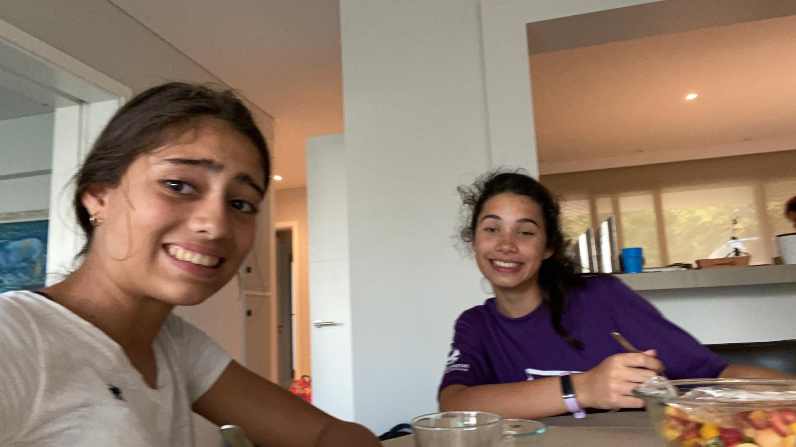
Martina and Marina suffering from sleep depravation.
18/03/2020
So people are supposed to have their cameras on during class. Only one person had his camera on.
Spinning Timo (Video by Milla)
Mr Dingley makes his class draw something that has to do with their personality. It's basically a Mural about yourself. The only requirements are that it has to have the country that you are from and some of it's culture.
27/03/2020
Physical Education during the quarintines is the stupidest class ever
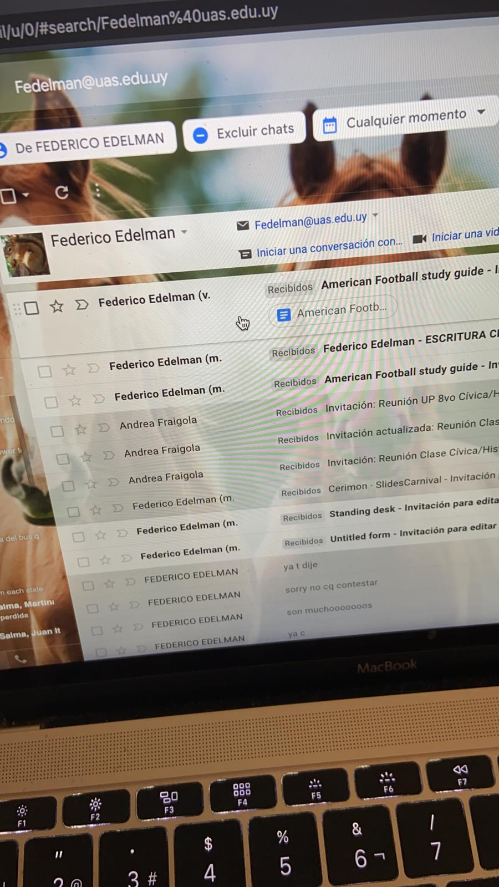
Fede's American Football Essay and Dani's "Jumping Jacks"
Ending:
Vacations came and not much happened there, the school's starting was celebrated in Valeria's house.
Farewell:
Ayla(Going to the US)
Final thoughts
Not many events since, well, it is a quarintine.
Quarintine 2/ Normal classes (2)
What happened
This did not feel like high shcool, but it was. The classes were sometimes normal, sometimes online. But when they were normal they always used masks. It depended on what the government issued out.
Microevents
New discord Serv: The girls wanted to be part of the discord, everyone except Timo, Dani and Fede opposed the idea. However fede was an admin dictator that added them anyways. By the way, the server had a very innapropiate channel, however they figured out a way to prevent the girls from seeing it.
The girls being in the discord became normal but then one day fede decided to kick Marina out, in retaliation Marina created a server named Server Without Fede (SWF) which had everyone but Fede, eventually fede got added anyway and the server became the main server, with the old server being abandoned. The server's name was also changed to SWF so now everytime someone new joins they will have to explain the entire story of how the server got that name.
A minecraft server was created
So Dani, Lupi, and Timo usually played minecraft pvp basically every day. Then Mati decided to create a server with people. The server was called TheUAS, you really don't have to read all the minecraft lore but if you want to then
hover over this text
They spawned in a forest, and they started building their houses in a village. Eventually they set the world spawn at this village.
Marina's, Mati's, Luca's, and Dani's homes.
Timo tried to kill Lupi but he failed and instead Lupi killed him.
At some random time in the middle of a storm for an unkown reason, Lupi started killing Martina. Timo took the chance to kill Lupi to get revenge from the time Lupi killed him
Dani was the first to get full enchanted netherite gear, he also bought Timo's fertilizer so that he would stop planting berries in his base.
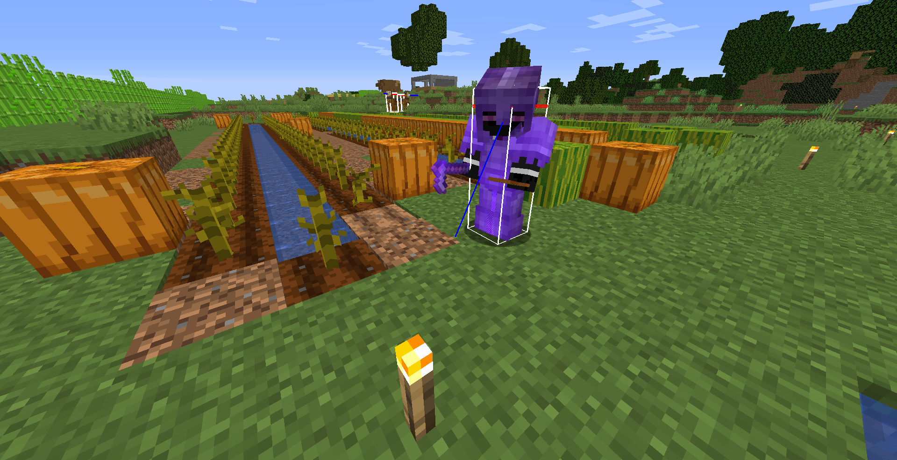
Dani
Martina and Marina created a starter housing area that no one used to my knowledge.
The starter housing area
Dani buys Timo's drugs (suspicious stew) and he is surprised that it give him the desired effect. Timo then scams Mati so they have a battle at the drugstore
Drugstore and Base of cofely
Ethan starts building a castle but stops gave up quickly. However ethan built the community enderchest, the community zombie farm, and the community sugarcane farm.
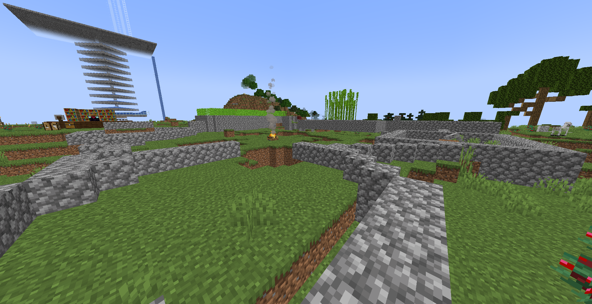
Ethan's castle
Timo builds his Japan and Brazil, Constan joins the server and becomes Timo's ally.
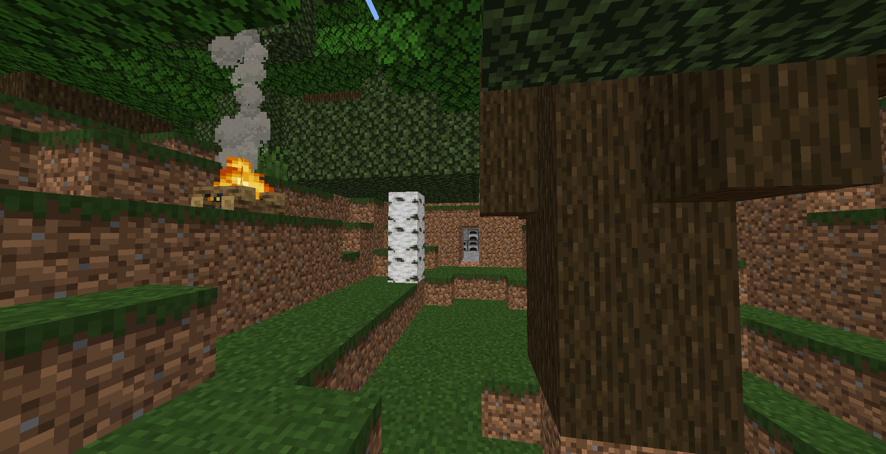
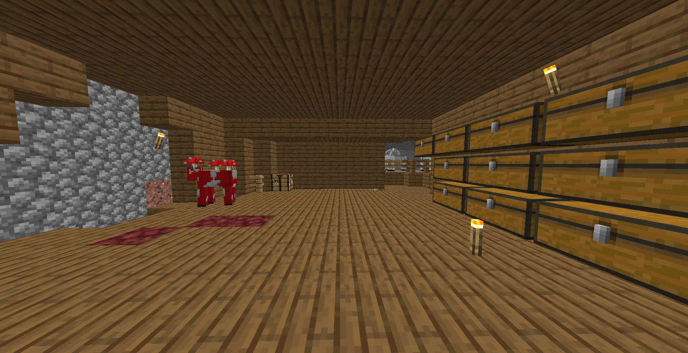
The Japan and Brazil bases
Luca joins the server, he creates this cool house and obtains netherite fairly quickly.
Luca's
Constan and Timo prank lupi by filling his house with berries and bamboo.
Lupi's house
At this point, for some reason, Lupi has a lot of enemies like Mati, Martina, Timo, and Constan all want to kill Lupi. This is because Lupi wouldn't stop killing Martina and Mati at some point. And Timo was just there, and Constan followed Timo. Lupi leaves and creates a base with a villager farm. He doesn't tell anyone about the location of the base. At this point everyone has overpowered gear.
Mati tries to find lupi's base through the neather but he is unsuccesful.
I think Luca was the one that killed the enderdragon but I am not sure.
Timo and Constan start preparing to go to war with Lupi. They gather villagers, potions, and constan creates an experience farm that he never finished. All thats left is finding Lupi's base, kill Nutz (his dog) and start a war. But finding the base proves difficult.
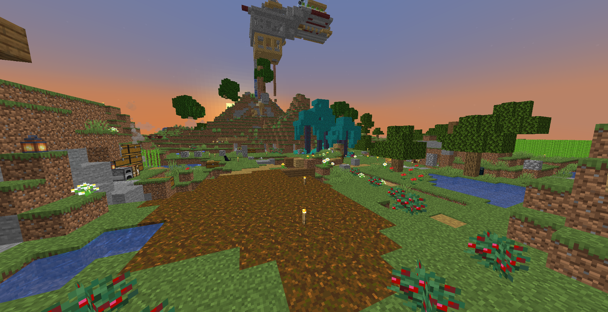
The final war base
Timo sees via a discord stream that Lupi's base is near a savanna biome. Timo gets a seed cracker, obtains the seed of the server, and finds the nearest savanna biome. With this method he succesfully found Lupi's base.
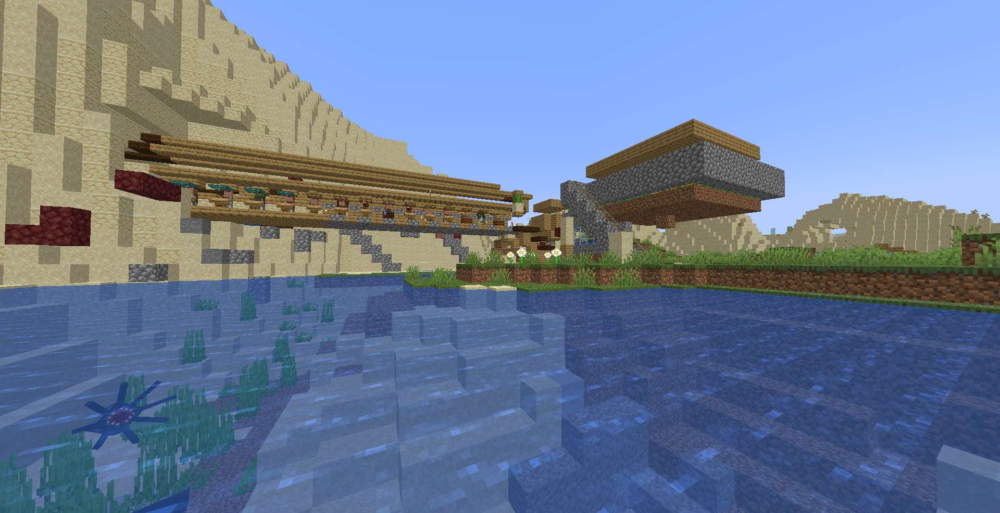
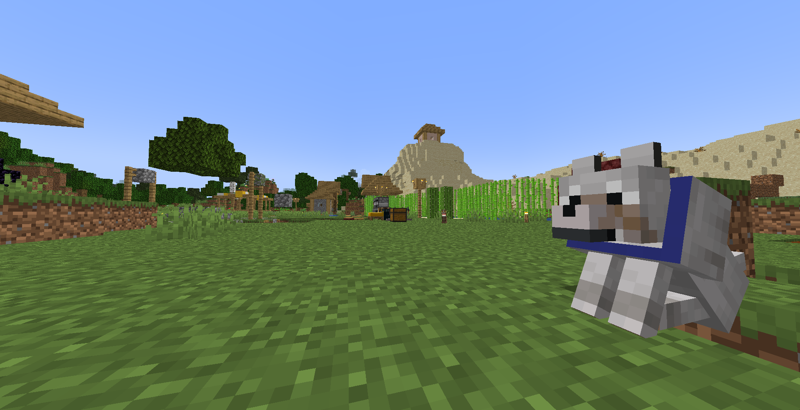
Lupi's secret base
Before starting the war, Timo asks Dani for help. Dani and Lupi know how to fight with crystals (you blow them up fast) which is the meta. Timo and Constan don't know how to do this so they might lose this war. That's why he wants Dani on his team. Dani refuses saying he must remain neutral. Dani really liked the policy of neutrality that the united states used during world war 2, meaning that unless Lupi attacked Dani, Dani wouldn't help Timo.
Timo dislikes Dani's neutrality policy and how it allows him to stay away from all conflict. So Timo decided that if Dani wasn't going to get involved in the conflict, Timo would bring the conflict to Dani. So he doesn't kill Nutz(Lupi's dog) instead he leaves a a book with a message to Lupi and to Luca, asking them to be allies for a war against Dani.
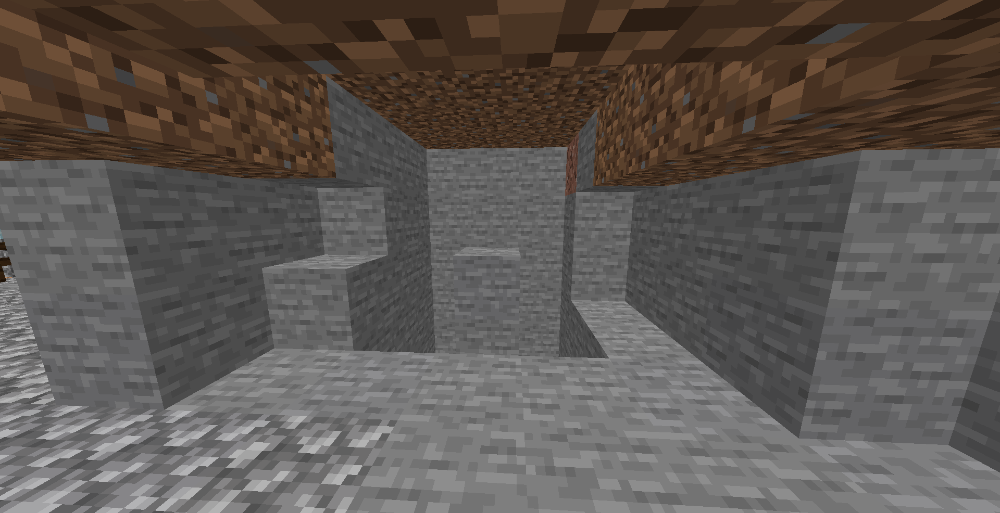
The two places Timo left the books at
Dani infiltrates into Luca's home and reads the book Timo left behind, now he now knows of Timo's plans. He quickly moves out of his original home base since Timo knew his location.
Then the server dies. These are some other bases
Martina's faraway base
Two unkown buildings
Mili joins much later, she attempts to create a base but it gets blown up by creepers a lot and she rage quits.
Mili's base
And one final thing. Timo annoyed Dani by planting a hell of a lot of berry bushes which Dani had to be constantly removing. Timo planted these everywhere. Dani ended up buying Timo's "pesticide" for berries which was worth 10 diamonds.
Timo's Birthday Celebration
Timo likes inviting all of his class to his birthday and do something fun. All the class was invited plus constan. Constan is not in the UAS Class of 2024, he used to be during elementary but his mother decided to move him to a boys only christian school. However he is still a good friend of Timo and he has good vibes (buena onda) with Luca, Mati, San, and others who were with him during nursery and elementary.
They went go karting this time and afterwards they ate pizza and marshmellows. It was really fun. Lupi had such a fun time that he fell asleep. This won't be the latst time that Lupi sleeps in a party. Everyone came excpet Millamaya Makimarti and Kacey Chen.
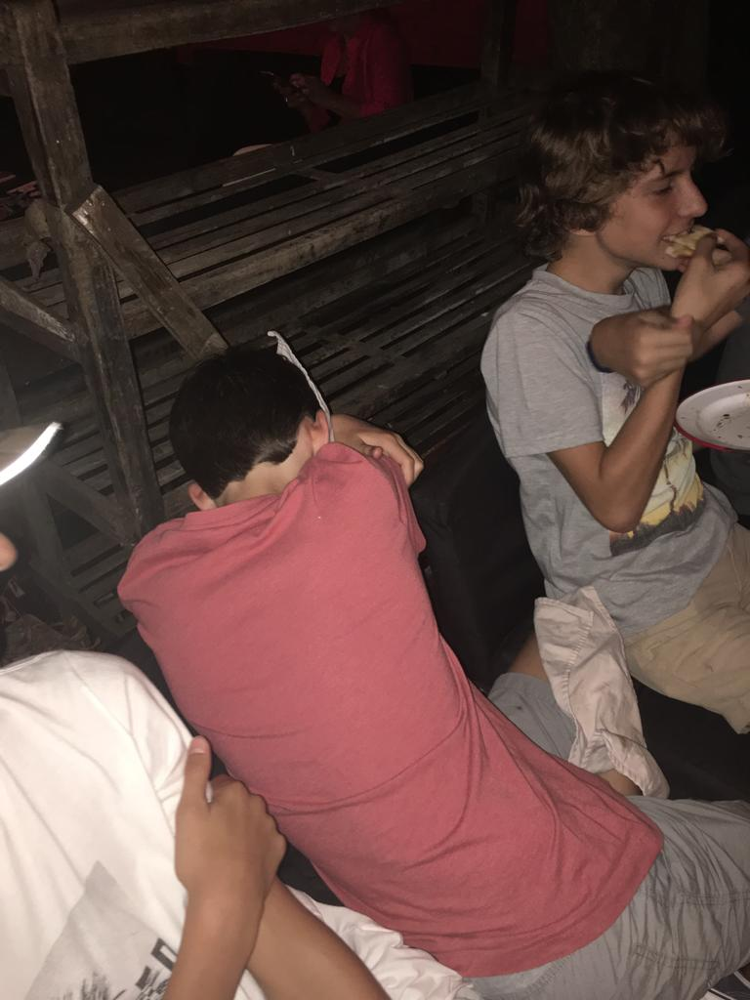
Lupi starting his tradition to sleep in parties
Origins
Timo is bored in History class and doesn't know what to do. He decides to use the Website Development Knowledge that turner gave him to create a website. So he creates a website where he just writes random dumb things, the first things he wrote are the questions "Is there anythign cool in this world" and Martina's Super Hero Theory. Martina has been missing school a lot lately, so Timo creates a theory that is probably true, you can give it a read it's still there.
Zarsky at some point decides that he will show the class the movie interstellar to his class since it has a realistic depiction of relativistic phenomena and thus it's educational. Martina really liked it and now she likes astrophysics.
Back to the bench is dismantled
This group gossiped a lot about everyone who wasn't present. They also had a lot of debates about controversial topics such as abortion and stuff like that. It was a pretty toxic group. But many of it's members left throughout the years. Sofi, Nata, Fede, Milla, Megan, and Timo are the only ones left. Nata and Sofi are leaving, at this point it's no longer really the same group.
Towards the end of school, once all the finals were over with. The Back to the Bench group did a secret santa. They went to the park in arocena near the club lon tennis. Timo received cactus socks from fede. Fede received a cauldron mug. And Milla decided to wrap her gift in duck tape making it extremely hard to open. This became Milla's signature gift-wrapping style.
They got McFlury's. Sofi and Timo went to get Crepes while they talked about how the biology final was easier than the biology tests because they are more broad and thus topics need to be studied with les depth.
Later that day, Sofi taught Fede how to do his nails. Fede came home to his family, and trouble happened. His family didn't like the fact he painted his nails. At this moment Fede realised that he would some day have to come out to his family because otherwise he was going to die inside.
On a seperate ocasion, Sofi invites the Back to the Bench to Rudy, a burger place that has amazing burgers. It's menu is very limited but the few burgers that they offer are really good. Rudy is located near Montevideo shopping. It's the only location they have at the moment. Rudy will become a fundamental meeting place for the class.
So teh Back to the Bench group is summoned one last time to Rudy for Sofi's birthday. And they had fun. They talked about how they all most definately cheated on the Math test even though Mr Zarsky made them take an oath that they woudln't cheat. Fede also got a cactus called Emily. The Back to the Bench has a history with Cacti that have several problems including but not limited to scoliosis, but they love their cacti anyway.
Og Back to the bench vanishes:In the last day of school sofi and nata left, leaving only 4 members of BTTB. These for people went on to create a new group.
Ending
A quite normal ending, not many interesting things happened, but one thing is awsome, and that's what comes next. Vacations came and everyone went to many different places.
Final thoughts
A weird time, no one did practically anything, all world was bad thanks to covid and many world events that caused a lot of chaos(specially in the US). Many girls decided to leave after this, and everything started changing, and what comes next is a completely different era.
Also, before this Dani would never agree with anyone. But his several discussions with Lupi made him realise that he is not always right and sometimes he ahs to look at things from other people's perspectives. That's what he said anyways. Lupi also noticed the phenomenom that Dani started to always agree with him on everything. Dani said that he would take other people's advise into consideration given that they have "An acceptable amount of IQ"
Now I'll give you a bit of a summary of what just happened. Everything was fine until the quarintines happened. No one actually learned anything in any significant way while the quarintines where happening. People just spent all day playing video games, and that was mostly it.
In the second quarintine, it wasn't really a quarintine since sometimes they still went to school, but everyone was really strict about masks and other stuff. They always played among-us in the recess and lunch since they had to eat in the classrooms. Also ocasssinaly someone woudl get sick and he/she would connect to the class. He/she would appear in the big smart board screen.
For the next chapter, most of the effects of the quarintines are gone, they don't have to use masks anymore, the next chapter is the real beginning of all of this, the quarintines where kind of the backstory to all of this.
(By the way, the timeline started in Real High School, that is why there is so little information of the quarintines.)
Real High school Begins(3)
Summary
Pre-IB started, class shedule went insane, and most of the girls left, they only have 4 now. they also have 2 new students(Sebastian Sass and Joshua Salisbury) and maybe 1 new girl(EDIT: She never came).(2/august/2021)-Some day in the future
There are two types of days, A days and B days. Every student has their own A and B schedule, Mondays and Wednesdays are A days while Tuesdays and Thrusdays are B Days. Fridays used to be all the classes combined, but now they alternate between being A and B days.
So, many girls left our school for this quarter, like Sofi , Nata, Vale, Marina, and Salma. So this class is now mainly boys. Also the class is in 10nth grade and the International Baccalaureate (IB) is essentially obligatory in the school of UAS. This means that the classes are now meant to prepare people for the IB. One of this classes is experimental science, a class that only teaches you how to do experiments and how to calculate error. A dats are hell and B days are heaven, everyone agrees that this is the case.
Early confusion:At the beginning of the class everyone was confused about getting art credits, they thought that if they didn't get art credits and now they wouldn't be able to get them, so they all left PE and went to art, however it turns out that they didn't need to go to art, but it was too late and the director did not let them change back. Except for Martina who somehow convinced the director to let her change to PE.
EVENTS
Table Tube Gang Origin
So you may recall the Back to the Bench. 4 people remain from this group, Megan, Timo, Milla, and Fede. The two new students Sebas and Josh joined these 4 people during lunch.
Sebas and Timo started talking about random things while playing volleyball and specially badmington, Timo insists on teaching Sebas some volleyball skills throughout RHS. WHile doing this, Timo told Sebas that Marta(Timo's grandmother from his mother's side) taught him a spell that allows him to cure headaches from any distance. Apparently this spell can only be passed down to someone during christmas, and it was passed down to Timo. Timo likes science and thus he doesn't really like the fact that the spell works most of the time but he thoerises it could be placebo effect.
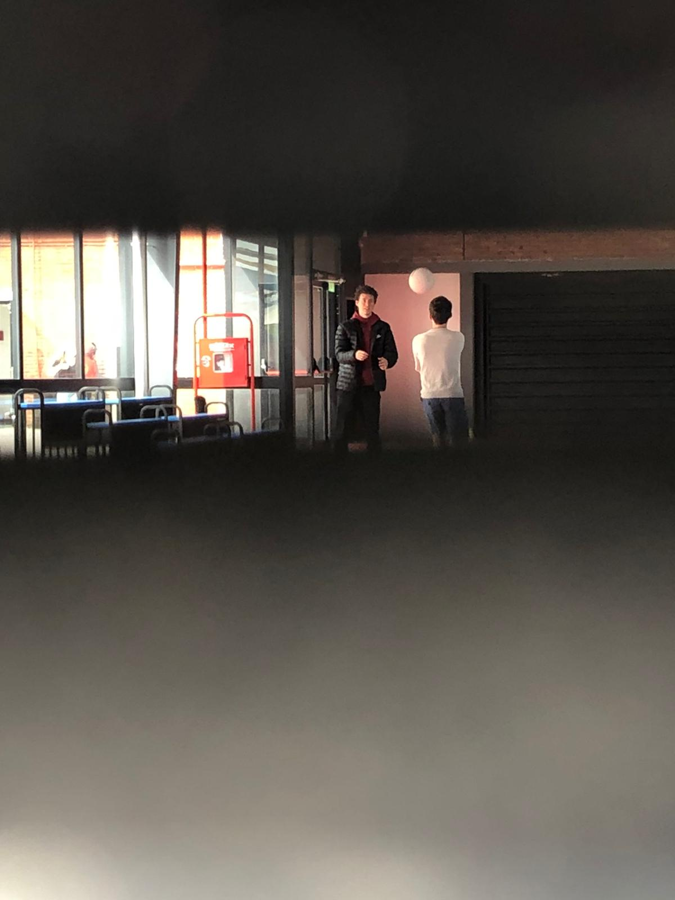
Timo teaching volleyball to sebas (Photo by Milla through the vents)
And Josh was just there, he plays the electric guitar really well, he is christian, and he goes to the gym. He is a pretty unique and cool dude, he doesn't usually talk much though. Usually will just add a witty funny comment on top of conversations.
One day, this new group was sitting in a blue metal table. The outside cafeteria space has a lot of blue tables, and some blue metal tables have this strange tube in the middle.
Metal Tube in the Blue Metal Holey Table
The particular table that this group was sitting in had a tube that was only being held to the table by one lonely rusty nail. During this time, the devious lick was a popular trend so I think you know where this is going. Timo proposed they could use nitric acid to dissolve the nail. Josh proposed a more logical appraoch which was to just use a screwdriver. That's what they ended up doing. They officioally stole the Table Tube.
This was the first significant thing they did together, and so this is called the Table Tube Gang, named after the fact that they stole a tube from a table.
El escondido:Timo invited the class to a burger place. 3 people went. was fede, sebas, and constan.
They ended up eating pizza in a place called El Escondido, which was a sort of hidden place. Fede wasn't sure that Timo was taking him to the right place since Timo is known for always being kind of lost. But this time he was right. After eating pizza, they enjoyed some ice-cream at las delicias
The Chronicle Begins
During History class, Timo decides to repurpose the Website he started buidling making a timeline of all events that he found relevant.
Coyle is absent 9/3/2021
English class
4th of September 2021
Garage Burger:Lupinacci wanted to do something so he asked everyone if they wanted to do something in whatsapp, many people wanted to but no one suggested anything, Nata wanted to do something so she messaged Timo to suggest something together. Timo was in arocena walking when a random girl gave him a pamphlet of a burger place, so he suggested that. Lupinacci and Nata were the only ones to reply. Lupi couldn't go at 20:00 which was the hour everyone agreed on, so they changed it to 20:30, but he never showed up. Constan joined last second. They ate burgers. After that the group went to Nata's house.
Also, Without her mother's consent or knowledge, Martina died... her hair, of the colour red or burgundy. I don't really know why. Probably because of some anime or something like that. During the quarintines she basically became obsessed with anime which makes sense since there wasn't that much to do during the quarintines.
It's probably like a one time thing, similar to the time where Natasia Bethe dyed part of her hair blue or the time where Sofia Ugarte dyed half of his hair pink
This is the only picture I found of Martina with hair that is clearly red
Chemistry 2021/09/17
The chemistry class learns about identifying different groups of elements using reactions. They also learn how to identify specific elements based on their flame colour. So they spend a long time burning chemicals.
If you like watching fire, this is for you
Later that day, in math class, san explains a problem that many struggled to understand. They class had a test and there was this one problem that Martina and others where struggling with.
San the teacher
18/09/2021
Movie:In a long weekend, Angie wanted to do something together, however when something was suggested everyone started making jokes and at the end nothing got done. The only ones who were serious about doing something Consta, Nata, and Timo. Nata new about many scary movies but all the hours where to late. In the end, Nata, constan and Timo went to watch, "A quet place 2" very late in the night.
The movie was pretty good. Essentially the planet was overidden by a biologically perfect species that can't see but can hear very well. However in this movie it's discovered that they can't swim which is pretty cool.
Mati's Birthday celebration (Saturday 25 2021 september):Mati invited everyone except Milla, Megan, Sebas, and Josh to his birthday party. He also asked Timo for Constan's contact so that he could invite him aswell. At the beginning people were eating chips and talking about music, but then Lupinacci and Martina came, Martina brought a volleyball ball so they played volleyball, the ball ended up in the roof multiple times but they always managed to get it back down. When they finished playing, they ate and talked a bit more and then went back to play volleyball but more people joined this time.
After that the burgers were ready and everyone ate them, Martina and Lupinacci got very tired and they decided they were going to lie down on a sofa with a blanket that Mati provided them with, however Lupi stole most of the blanket and Martina didn't like that. Then they all went for a walk to go to the swings, Martina took the whole blanket for heself as revenge and Lupi wasn't a fan of that, so Lupi started chasing down Martina, and they fought for the blanket on the way to the park. At the park, they enjoyed the swings a little, but they quickly decided to go back.
A comfortable Lupi stealing most of the blanket from Martina
The group walking back home
Then they came back and sang happy birthday to Mati, they also played volleyball one last time, and Mati threw it ontop of a flat roof so this time it wasn't coming down. Martina had to wait until monday to get her ball back.
Mati Cake time
Those who came
Mati
Martina
Angie
Constan
Lucas
Luca
Lupinacci
Fieldtrip to El Salto del Penitente 08/10/2021: 10nth and 9nth grade went to a fieldtrip to El Salto del Penitente, a tourist atraction in Uruguay that has a rock, rock climbing, ziplines, and varied activities. When they arrived, there was a dog, also Josh was wearing this green hoodie.
Josh and a Dog
Timo brought his point and shoot camera which had several old fotos from everyone's childhood. In one of these old photos, san appeared. He showed this photo to san, and San's reaction was "Bieennnn, siempre fachero".
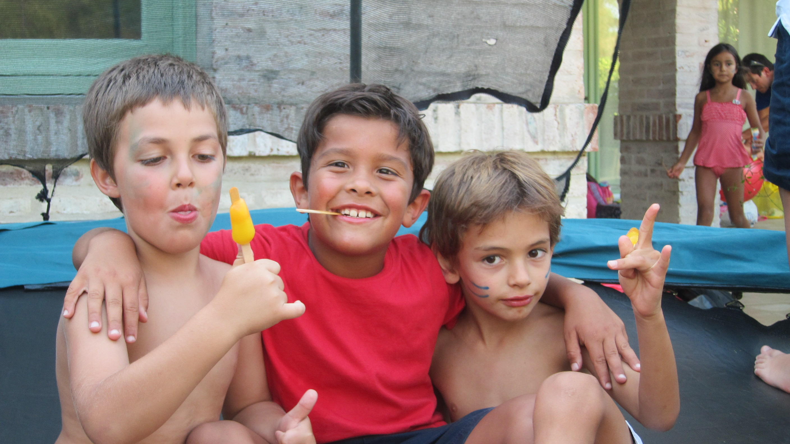
The picture has tiny timo, tiny san, tiny rodrigo, and tiny natasia in the background.
They did some activities and they also explored the place a bit. The students were given cameras so they could take some photos of stuff.
El Salto Del Penitente
They did all of the activities mentioned above, and some other ones like jumping a rope, or catapulting people into the air and catching them. In hindsight that one was a bit too dangerous I don't think we should have done it.
The Activities
Racing tik tac toe
Catapulting people as high as possible with a net
Taking the longest time possible to reach the end of a path with a bicycle without falling
Climbing rocks
Getting as many people to jump the same rope as possible
Carrying people in a wooden plank
Waling
Activities
They also eat at a restaurant that offers milanesas. The Table Tube Gang sits together.
Very good lighting Timo
Mall going 15/10/2021 : Lupi, Luca, Fede, Timo, and Angie went to the mall and ate burger king and ice cream.
29/10/2021
It's UAS Halloween so everybody dresses up.
"ive always wanted an occasion to wear this" - Martina through the class groupchat
The Table Tube Gang dresses up as blanket ghosts.
Missionary Mission (October 29 - November 1 2021 ):Timo and Consta went to a christian mission to convert people in Casupa, Timo is thoughtful and beleives that the religion must be wrong in some aspects but he also believes the morals it teaches are mostly good, Consta is very christian and religious.
Mission Time
The group went through the entire village singing hymns and songs and talking to people and spreading kindness. The sun was very hot and it was painful for Timo who hates heat and the light of the sun.
Concert
The missionaries hosted a concert where people could just do anything, many people from the town showed their talents. Everyone insisted for Timo to play the flute in the concert. Despite his flute skills being... questionable... he followed through, but also played a song in the guitar.
Timo playing a song in the guitar
2.11.2021
Lupi has this purple hat that he brought to school. Many people used this hat
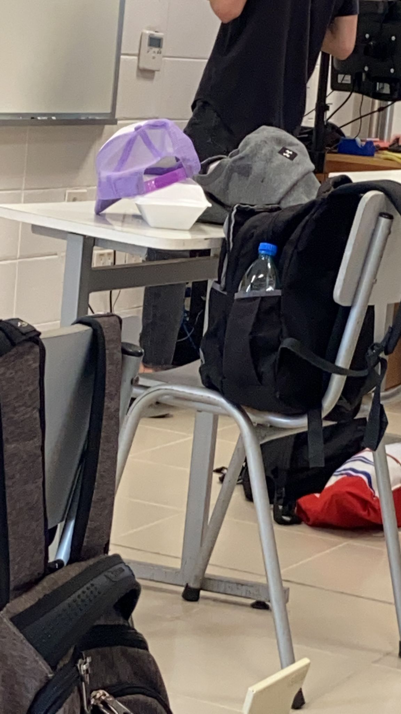
The purple hat in san's desk
Lupi has this purple hat with a funny drawing, many people wear this hat.
Milla floating in 4/11/2021, and she is actually working unlike everyone above
In computer science, Sebas introduces lean to Timo and Milla, it's a purple drink that involves cough syrup, sprite, and alcohol. Very random thing, but this becomes an inside joke.
During lunch, Sebas talks about Mothman to the TTG, and no one knows what he is talking about but everyone just goes along with it.
In computer class, Timo introduces the country of Sealand to Sebas and Milla, he shows them the website and how you can become a lord or a lady of sealand by purchasing a title. The country of sealand is a small artificial helicopter pad built for a war, it's technically outside of the propert of britain so someone made it a country, but nothing is official, they used to have passports but now they don't. Milla found the story really funny, and this becomes important in the future. Timo then decides that he will make his text adventure game about sealand. Sealand becomes somewhat of an inside joke to them.
7/11/2021
Family fun day occurs, it was pretty fun.
10/11/2021
Sandwich day, the dresses up according to the colours of sandwich ingredients.
11/11/2021
Sebas has music class with this guy called Constantino Zaffari. Sebas does not enjoy the presence of Constantino Zaffari. They are also in the gym instead of the music class for some reason.
Sebas and Consta
Also Lupi gets the following score in Monkey Type
Monkeytype
12.11.2021
The Chemistry class does some interesting chemistry things. Hydrogen Peroxide naturally decomposes to water and oxygen in an exothermic way . However this process takes a long time when it happens naturally, luckily there is a tool that chemists can use to increase the rate of reaction. Catalysts are capable of reducing the activation energy require for a reaction to take place, they make it easier for things to happen.
So now more molecules are above the threshhold of energy required to react.Water and Oxygen are the products created by this reaction, and they are also gasses. Thus if you add soap and maybe some food colouring to the reaction, the gasses create it will blow many tiny bubbles creating coloured foam! But its an exothermic reaction so be careful not to brun yourself.
Skip to 3:50 to see the fun foam
11/16/2021
The class is now studying The Great Gatsby, a great book
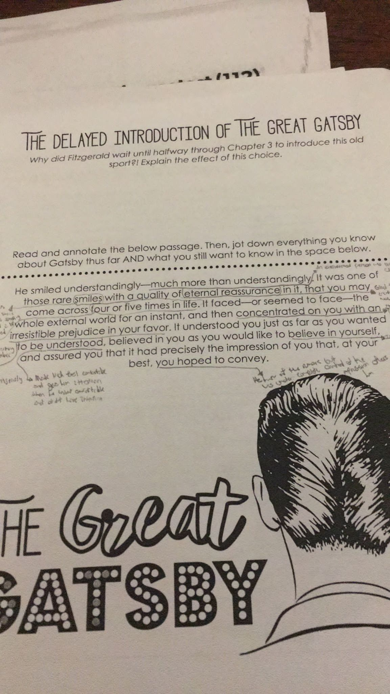
A worsheet about how the the introduction of the Great Gatsby is delayed so that he seems more important
TTG watches a movie
20/11/2021
The TTG was summoned by Josh to watch a movie in his house. Milla is lost in the streets when she crosses paths with Timo, and then Milla follows Timo to Joshes house where Fede and Sebas are waiting.
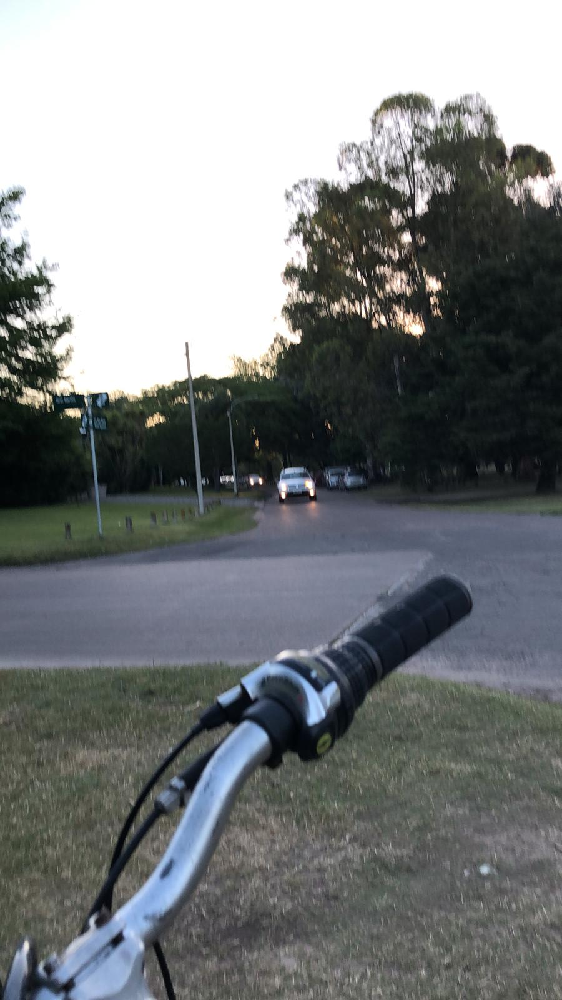
Milla lost
Timo and Sebas start to talk about random things and then Fede hears them for a second and then questions them as to why they always talk about such unrelated stuff all the time. But he doesn't question them in a judgmental way, more in a curious and funny way.
Fede
Timo and Sebas start talking about some random things while everyone else decides what movie they are going to watch, Josh set up a projector outside so they can whatch the movie in a wall that was near the pool, unfortunately no pictures of the amazing set up :(
They put blankets on the grass, got some snacks like popcorn and oreos, and started whatching cruella. The movie about the origins of cruella.
After the movie, everyone left, Josh showed Timo some of his instruments and then Timo also left.
These are some pictures that where taken.
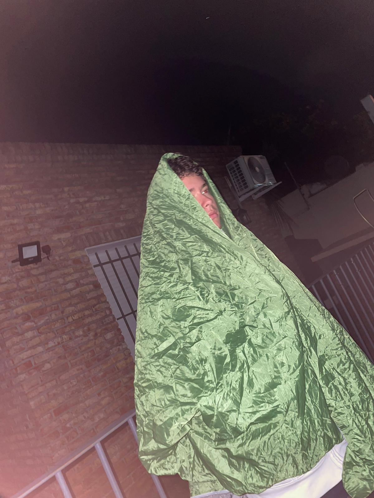
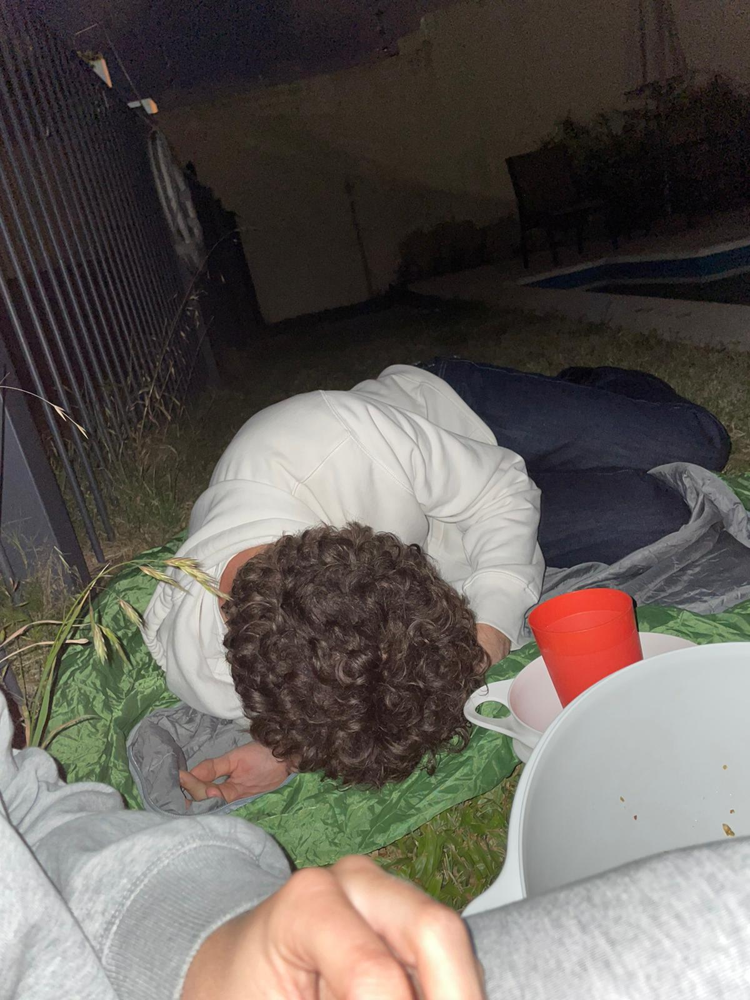
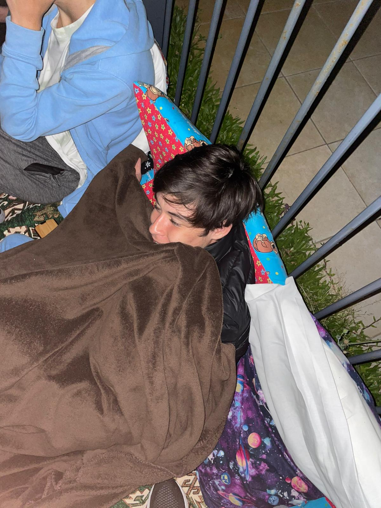
All the photos taken, and also a video.
23.11.2021
The art class makes art out of Fede's face. This is meant to represent how we all symbolically wear masks. Is it good that we all wear masks? What are we hiding? Why are we hiding it? I don't know I wasn't in art class.
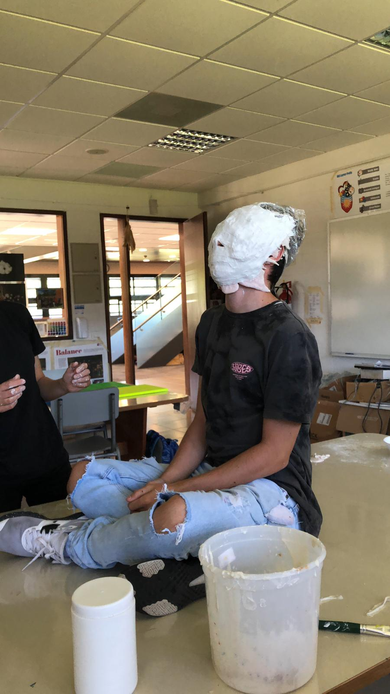
We all wear masks
Thanksgiving
25/11/2022
Thanks giving lunch happens, the school eats in the auditorium, they eat chicken because they couldn't get turkey. They also had a calssic thanksgiving dessert.
After eating, the school gave everybody some shirts that were from the past thanksgiving, everyone signs their name in the shirt, leaving their lecacy for future classes. After that all classes go to compete in various activites, like chess, tug of war, and also ping pong.
Ping Pong
Because of thanks giving, ping pong tables where bought by the school. They weren't used that much in this chapter, but they become much more important later on.
Also Martina sends this through the groupchat because she is obsessed with Genshin Impact
"TARTAGLIAAAAAAAAAA"-Martina
26/11/2021
Lupi does a pool party with Hamburgers and stuff. It's for his birthday.
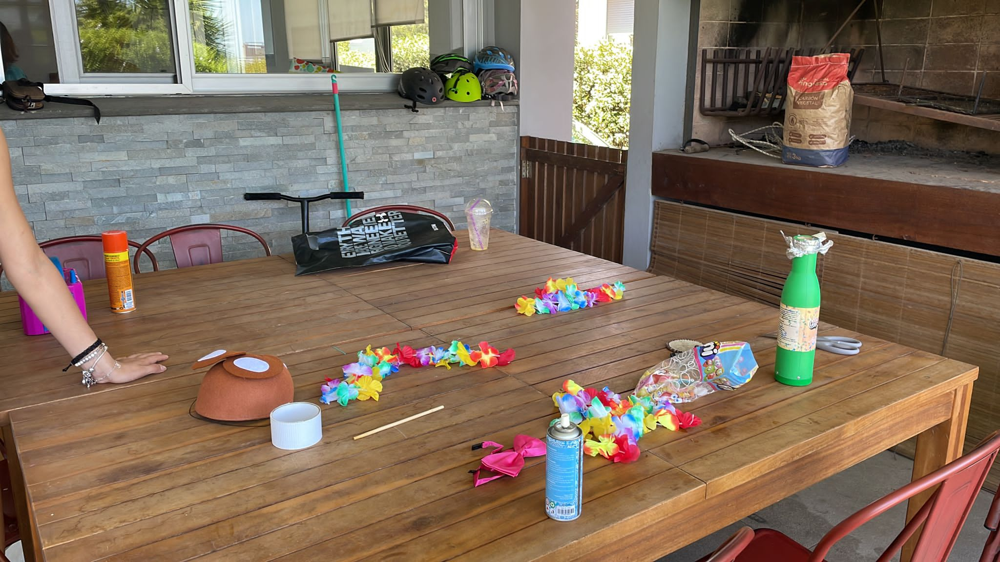
Lupi's House
2/12/2021
During History class, people send Dani some photos of muscular dudes through discord. Dani has started to do bodybuilding, and its starting to turn into a little bit of an obsession. The joke here is that Dani might be gay because he always looks at bodybuilders. Many people call dani the alpha male, and this becomes a recurring joke.
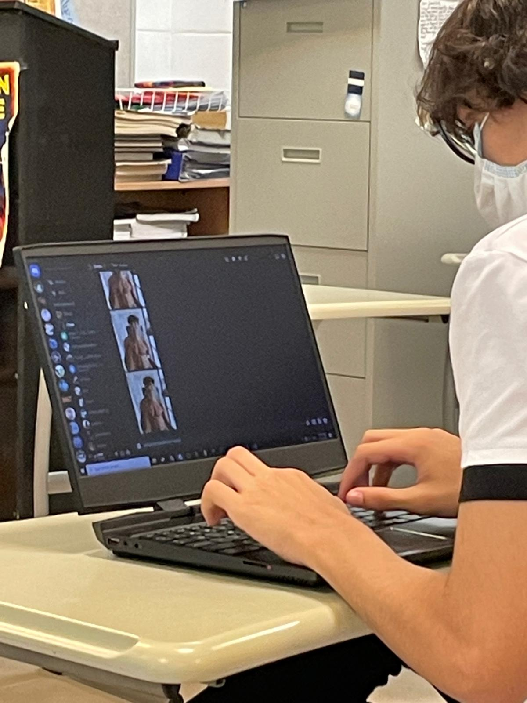
This picture was set as the SWF picture (The Discord Server) and it has remained the server picture for the rest of the server's existance.
Dani plans to start going to the gym to aquire his ideal physique
5.12.2021
The class must prepare an obituary, a eulogy, or an elegy for the great gatsby
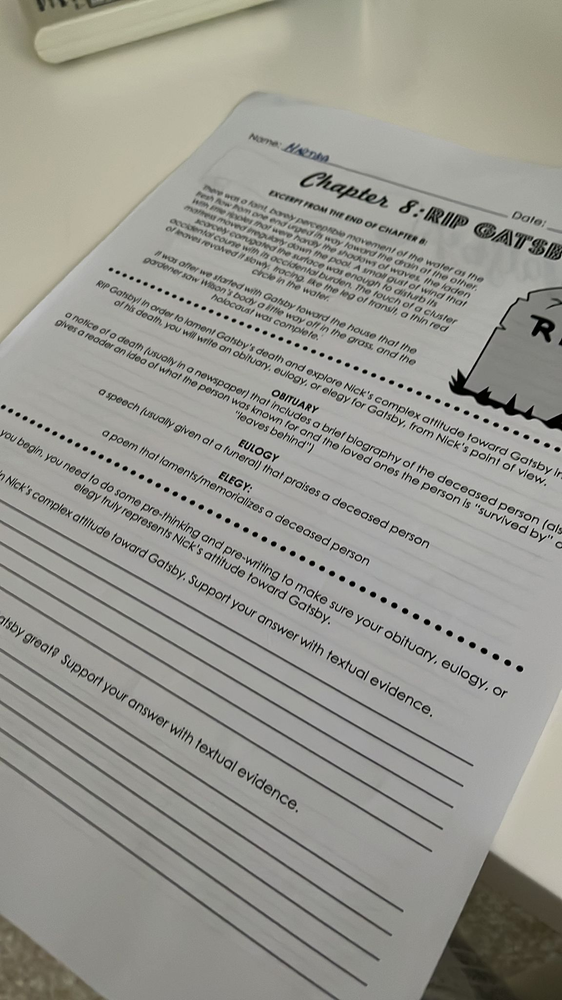
The homework assigment of english
09/12/2021
The class of Spanish is tasked with making memes about the texts that they have read. Everyone makes a meme. The two most notable memes are Sebas meme which was about how Dante was only visiting hell while the rest of the people were actually stuck there, and thus they weren't the same. Then there is Lupi's meme
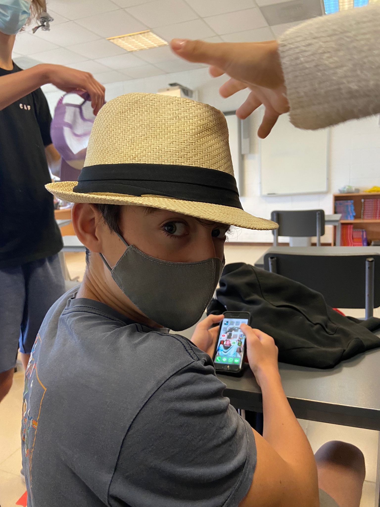
The art and the artist (And Martina who recorded the video)
Here are all the works that the class did, except for a book called kentukis
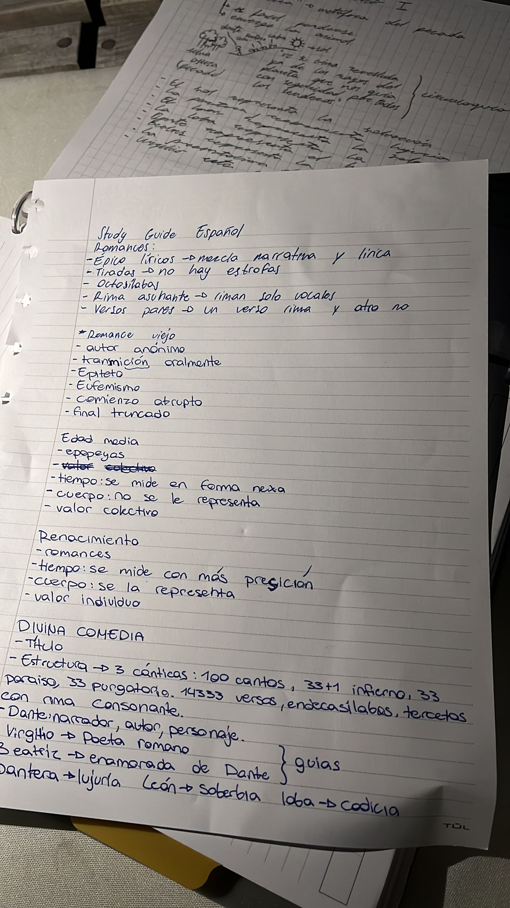
Martina's notes
History Classes
Today, the history class took a test about history. The test was comprised out of several TCI questions. Mr Foege's homework and test are mostly built out of TCI material.
San, Luca, Fede, and Angie being very productive during History class in 14/12/2021
One Last Unexpected Thing!!!
Before finals start, Martina reveals that she will be leaving the UAS Class of 2024 by the end of this chapter. She is planning to leave to Boston for some reason. Everyone is shocked and they try to convince her to stay but it seems that the decision is made..
Ending
The finals end, Timo invited some people to watch spiderman no way home, lupi Fede and Mati came, after that they went to Rudy's. In Rudy's, they look at photos that they took during this chapter and the comment on them, some of them are pretty funny.
Martina left to boston, and Marina is coming back in the next chapter of the timeline.
Final thoughts
This year was incredibly exciting and scary, the world was still pretty bad, they had to wear masks and stuff like that, but they got used to it and they made the best out of it together. Things where starting to be more normal, this was a better high school experience than quarintines. The change was more cool than scary. And what will happen next, some particularly weird stuff happens. Also, people are leaving.
New and old new students: After a long time of no new students, Mili, Bruno, Chiara, and Alex come to the school. Aswell as Nicole, who already knows many people of the shcool since she was in the school like in third grade, and also Marina, who had been in an exchange program to the US I think or something like that.
Unbalanced Shedule: The shedule never got fixed so A days are still hell and B days are super easy
Weirdness: Many unexpected things happen, Nicole comes back, Marina comes back, Mili and Chiara get introduced, Bruno is introduced and he is one of the weirdest parts of this chapter.
Weird stuff that has happened
Marina also coming back
New students
Nicole comes back
Russia and Ukraine are in conflict and the world is intense
Covid is still a thing.
Full Return to school after being half-online
IB preparation, IB talks, choosing IB
Climate change is beginning to be noticeble, hot and cold days are completely random.
And more
All of this weird stuff gave the start of this year an unpredictable but also fun feeling. Except the war... the war wasn't that fun. There are also other certain sad things :(
Other things:
Millamaya Makimartti will be leaving at the end of this chapter
Megan Billingley is also leaving
These are 2 fundamental members of the Table Tube Gang, so it's really sad that they are leaving.
Events
Hish School Party: NHS organised a party to gain money for prom, the part had alcoholic beverages and people brought vape, many attended it.
People danced inside while drinking beer in a group, while Fede, Ethan, Timo, and Lupi talked outside, they then decided to go up where Lupinacci continued his tradition of sleeping at parties. Ethan decided to try drinking beer, and trhough the night, he finished a bottle.
Mili really wanted some beer but could not open the bottle, so she simply smashed it against the wall, big brain move.
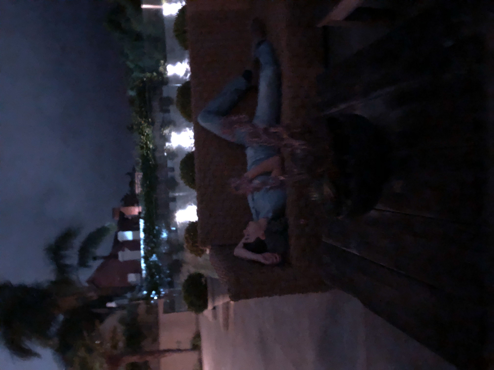
Lupi sleeping
Those who attended
Marina
Nikki
Timo
Luca
Angie
Lupi
Mili
Ethan
San
Chiara
Dani
Alex broke his shoulder in gym class: So people were jumping plataforms in PE class through the use of a trampoline. In a strange maneuver, Alex lands terribly and dislocates his shoulder or something. He went to the nurse, asssisted by many, and then he could not take PE for the rest this Weird Era Adventure. Nice one. Instead he took art which he absolutely hated.
Lupinacci got a tumour removed from his leg so now he can't walk very good.
Timo's Birthday Celebration: Timo made a groupchat about his birthday, in which he added the entire class except Bruno because he failed to get his phone number and could not talk to him, he also added Nata and Constan. Alex was not able to come because he had a broken arm. San was not in Montevideo. Josh never replied to any messages. And Lucas was very occupied, however, Timo convinced Lucas to come despite having a tight shedule. And then at 21:00 people started arriving.
The firsts
Seba came first and tried out the ewheel.
The Ewheel is an electric unicycle that can go up to 50km per hour. Sebas tried it out but he failed multiple times. It's fairly hard to learn how to use one since it takes some balance.
Timo's father sells these
After that Lucas came to the party, Timo introduced them to all the party place, there were sofas, a ping pong table, and a volleyball.
Timo played Lucas some ping pong and got destroyed since Lucas plays tennis professionaly and he is really good. After that more and more people started arriving. Lupinacci arrived along with Marina and Martina. apparently she arrived to Uruguay that very same morning. She said she was going to come back to UAS, so I guesssss
The table tube gang gave Timo a package wrapped completely in duck tape, this was Milla's doing. After an eternity, Timo got it oppened, inside there was a UNO hot wheels car, a kinder egg with a barbie ponytail inside, and a paper saying that Timo was now a lord of sealand. The paper was not oficcial but they said the oficcial paper would come to his home eventually. Which at the date I am writing this 27/02/2022, has not arrived yet(EDIT: — 16/03/2022 it arrived I am a lord of sealand feel my power). Nata and Luca got him a chess book for begineers which was useless to him. And Marina, Mili, and Chiara got him money.
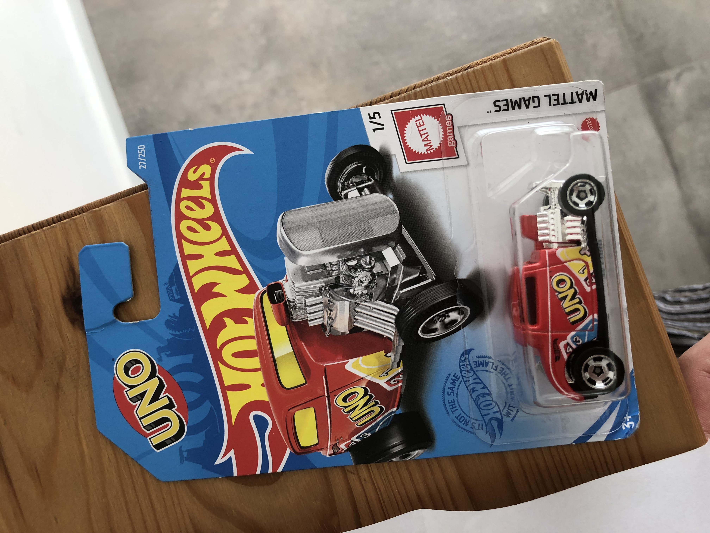
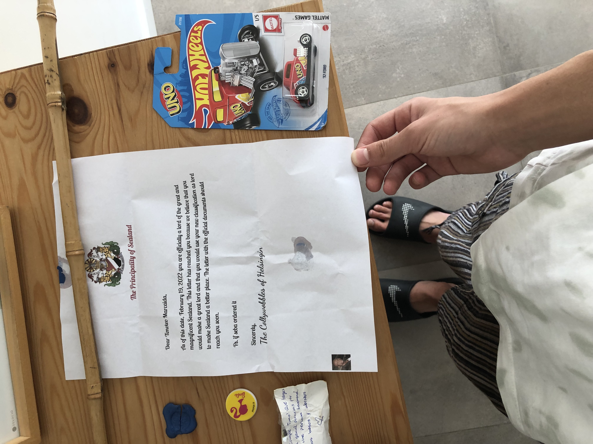
Table Tube Gang gifts
After playing some ping pong with people, and destroying Sebas at chess. Timo decided to go inside where he played super smash bros against Ethan. After that he saw everyone playing football, so he told everyone that there was an actual soccer field they could go to. It took a huge effort, but they finally got everyone moving towards the field, while Timo showed off his ewheel skills (falling down twice). In the field Ethan tried to learn how to ride the ewheel and he kinda got the hang of it. Then Chiara tried it but Ethan accidentally dropped the wheel on her foot, which left her with an injury that hurt for the entire next week. The group saw the disturbing instagram of the new student, Bruno Nario. His instagram had very tabu stuff and racist things?? I personally didn't get to see it but from what I've heard, it's not good. Then they played football penalties while Milla and Megan watched from atop the playground games..
Milla then tried the ewheels and she was surprisingly good. Lupi tried the ewheel with a broken leg, so he needed to use the things for the broken legs that I don't remember the name of. Then everyone went back to the house to eat ice cream and pizza. At this point they were pretty tired, specially Martina who had a flight today.
Timo played ping pong with Dani and Constan while everyone else chatted while eating ice-cream. after that many people leave and only Lupi, Luca, Ethan, Angie, Mili, Martina, and Mati. They play super smash bros and exploding kittens. Then Ethan left and they where all on our phones. And finally, everyone else left.
Too bad Santino couldn't come. The conclusion is that it was a nice start to everything.
Those who attended
Sebas
Milla
Megan
Lucas
Luca
Lupi (He came with a broken leg or knee or whatever, he's so cool, unlike Alex)
Angie
Marina
Martina, uninvitedly appeared
Ethan
Mati
Constan
Nata
Fede
Daniel
Mili
Nikki
Chiara
Fede's Birthday Celebration:Fede invited the table tube gang to bowling/arcade. Nothing much happened but it was revealed that at the end of the Weird Era, Milla and Megan will leave to their respective countries, Finland and the US. Although Megan wants to stay and is going to try to stay in Uruguay in Alex's house
Nata realizes she wasn't invited. This was probably because Fede only invited everyone in the Table Tube Gang group, accidentaly excluding Nata who belonged in the older but now mostly disasembled Back to the Bench group. Regardless of the reason, Nata got mad and stopped talking to Fede.
Hanging out 06/March/2022: Lupi wanted to do something so he he told everyone they should hang out. But he did not want to do it at his house so he asked marina to suggest her house.
Timo, Mili, Angie, Mati, Martina, and Lupi went to Marina's house to hang out. Timo brought tomato and lemon chips at the behest of Mili, and she was actually surprised he got them. They talked in the trampoline. After that Mati played ping pong against Timo, it was a close match, but Timo won, Angie wanted to go to the pool, and so she did, she tried to convince everyone to join her, but no one did.
Then everyone went inside where Mati and Marina played the most intense and complex game. It was too complex for the average human mind to understand. I think Marina won, or they tied. It was hard to tell
12 Dimensional Gameplay
Minecraft
So Mati created a minecraft server. I will be refering to everyone by their minecraft usernames because its fun. Lupi is Lupinacci so I will still call him Lupi. But I won't tell you the rest :) mostly because this does not impact real life at all.
The group played minecraft on an smp created by Mati. Lupi was trying to kill everyone in the server and cofely was trying to kill Lupi to stop him from killing everyone. cofely surprise attacked Lupi, and was about to kill him when lupi used an enderpearl to escape, then he proecceeded with his plan to kill Onono. Lupi was about to kill onono, cofely intervenes, however this time Lupi noticed cofely before he was able to surprise attack him, they exchanged hits, the battle is even. Lupi ate cooked mutton to regain his health, cofely responded by eating his signature sweet berries to regain absolutely nothing and he proceeds to get destroyed by Lupi (berries are not the best food source). And thus Lupi killed everyone. After that chaos started happening and DumpyBunda(the owner) reset the server and everyone left.
Okay but this part is important
Martina confirmed via discord call that she is coming back. In the same discord call
Timo cuts his hair
Minecraft loreThe next day Martina wanted to play, but everyone took too much time so she ended up not joining. They played party games, which consists of a series of random games and the one that wins the most games wins the round. cofely dedicated absolutely everything he had to sabotaging Lupi as revenge for killing him last time. However Lupi is cracked at party games, and thus he still managed to get in second and even first once.
After that they played on Mati's recently reset server. Lupi tried speedrunning and cofely was gaining materials to sabotage him. Lupi avoided cofely using distance so cofely never got to kill him back. After that DumpyBunda decided to enter creative mode and build a house, he also gave creative to Mandariina. While zarcnum helped her and cofely build his own little house beneath the pond that mandariina made. They where talking about jobs and the future. But Mati broke the rules of not using creative, so he reset the server for the last time.
Mili insisted for Timo to invite eveyone to hang out at his house so when he finally invited everyone only 3 people came and none of them was Mili: So Mili failed to go to Timo's birthday, and thus she insisted for Timo to invite everyone to his house again. This was not ideal because Timo lives very far away from everyone. He lives in a place caled latahona which is like 25 minutes away from school.
So Timo eventually gave in and invited everyone to have some burgers, but as expected, many people couldn't find a way to get all the way to Timo's house and back so it was moved to the next day.
In the next day, it almost got canceled again, but thanks to Mati's efforts, Lupi, Marina, and Mati could come. Mili however couldn't come because she had some medical issue. So Mili's absence wasn't completely unjustified however Timo often taunts her about the fact that she made him invite everyone and then she didn't show up.
They made hamburgers, but one of them fell into the fire.
The Super Well done burger [burned]
After that, they try to re-create a funny picture that Lupi's sister had taken. They were quite succesful if you ask me.
Lupi's sister(Franccesca) and Lupi
Then they play with Capu and with a Frisbee. Timo accidentally hits Capu with the frisbee twice. After that, they grab a boomerang, but no one really knows how to use it so they proceed to grab a volleyball.
Eventually they all go inside and play super smash bros with funny looking Miis that they created of themselves. Then they start a game of monopoly but they end it immeidately because everybody thought it was boring.
Then they eat ice-cream and then they left.
Mili and volleyball
So in Physical Education, people play volleyball, thats the sport that is currently being covered. Alex is pretty good at volleyball and he really likes it even though he claims to have never played it. But that's besides the point. The point is that sometimes volleyball gets kind of competitive, but only slightly.
Several people (like Sebas) don't like actually try in volleyball, and so they just kind of stand in the volleyball court doing nothing. Mili is one of these people. People who don't do anything in court are often taunted by the rest of the team who is actually invested in the game. Sebas didn't really mind this, but Mili absolutely did.
The person that taunts Mili the most is Lupi and Mili was absolutely not having it. In tonights discord call, Mili was absolutely fuming and she got mad at essentially everyone for making fun of her due to the volleyball situation. She claimed that they had no right to make fun of her and that she didn't give a shit about the Physical Education class. Lupi argued that if she has the right to not give a shit about PE, then everyone has the right to make fun of her since she is ruining the game for those who actually want to play.
The argument went back and forth for what felt like hours. Fabrizzio ended up muting everyone in the call so that Mili could calculate the percentage of people that made fun of her in PE since she was in Extended Math[The prep course for Math HL]. She came up with the results that either 50% or 11.6890834983% of the people made fun of her (Both are wrong it was actually 100%) Everyone started making a transcript of what Mili was saying in the general chat which was really funny. Essentially no one agreed with Mili and everyone believed that if you are not going to try at volleyball then you should be okay with puting up with some taunts. I also want to clear out that Lupi's taunts are never very serious, they are all joke. Even though they might get really irritating after a while
After that insanity, Martina confirmed she was coming back to school. The group also played a bit of minecraft, where Mili joined for a second, cofely started living in Mili's house on the basement. And DumpyBunda scammed cofely.
Timo invites Alex to play ping pong in the ping pong tables, Alex plays against him but he is not that good, he is an average level of good. Then Alex goes to sit with the Table Tube Gang.
This has been were Alex often sat, he kinda joined the Table Tube Gang and became friends with it's members. During History class, he usually plays fireboy and watergirl with sebas. And he has art with Milla, Megan, and Fede even though he would have rathered having Physical Education. Unfortunate how he broke his arm. And now he often plays ping pong with Timo
Martina did come to school after this day, but it was for like 2 minutes and she didn't take classes so it doesn't count.
21/03/2022
Okay now Martina actually took classes and stuff so she is officially back. She's got a lot of catching up to do though.
Also, almost the entire core maths class got mad at Zarsky because they doubted his teaching methods, later that day in a discord call, Martina, Dani, and Lupi voiced their opinions against Mati, Milagros, and Marina[OoOoo alliteration].
Mati, Marina, and Mili claimed that Zarsky was not a good teacher. Mili was not in Zarsky's class but she knows her brother hates him and that is enouph evidence for her. Mati and Marina are also not in his class at the moment but they still think Orrico is better.
Dani argues that Zarsky's teaching methods are great. Martina pointed out that Zarsky clearly wanted his students to learn. And I don't remember what Lupi said. Timo was also here and he agreed with Martina.
Martina also likes Zarsky because during the second quarintine, Zarsky let the entire class watch Interstellar because of it's realistic depiction of wormholes, black holes, and time dilation aswell as an intuative visual to understand the 4rth dimension. Zarsky is a good teacher
Gender talk in Advisory 25/03/2022: In advisory, the teachers decided that it was a great idea to seperate the group into boys and girls, and talk about gender related topics.
The boys where with Mr.Zarsky, they talked about very non-interesting stuff actually, they just listed out stereotypes and how they affect men in society. The only coflictive thing that came out of the talk of the boys was how Lupi said that a boy could never be a friend of a girl, but he immediately took it back and rephrased it into a much less conflictive and more understandable take, saying that if a boy and a girl are friends, but one cofesses love, it might ruin their friendship.
Girls on the other hand, where not afraid of criticising the opposite gender. Ms Coyle asked the following question "Who is the villain of the girls?" the girls agreed that the boys where the villains. I don't really know how many answers that question really had. They said that girls are competitive towards each other thanks to boys putting up expectations and standards that must be met, and thus girls become their own villains, but the boys are behind it all so they are the master villains. Things such as beauty standards. They also mentioned rape, and other things that made boys the true villains towards girls.
This event caused ripples of conflict throughout the day, where in the breaks they would discuss about the stereotypes and all of that complex stuff. The Table Tube Gang pretty much agreed that this was one of the most effective ways to make the class hate itself. Maybe Zarsky and Coyle wanted to bring awareness or something. The next advisory is going to be the two groups together, discussing what they talked about in this advisory.
Minecraft lore end 30/03/2022:cofely killed the ender dragon without anyone's knowledge and then no one played in that server ever again (To my knowledge).
Lupi's leg is recovered by this point. Although it's weaker than his left because he did not use it that much
THE JOKE: Timo, Alex and Sebas where walking out of computer science. Timo sarcasticly said that Sebas was the best ping pong player in the school, Alex believed it, and Timo and Sebas looked at each other took this opportunity to make him think that Sebas was a ping pong master. Sebas said an amazing quote by the way "They call me the Ping Kong". Timo and Sebas told Lucas to tell Alex that Sebas beat Lucas in a ping pong match. Now Lucas is a proffessional tennis player, the best of his age in Uruguay, and thus he also plays ping pong spectacularly, so beating Lucas is actualy an insane achievements. It was an entire conspiracy. Sebas is actually one of the worst ping pong players in the school, so to prevent Alex from finding out, Timo and Sebas must do everything in his power to prevent Alex from playing against Sebas
Alex then plays against Timo, and Alex beats him.
By the end of the day, both Timo and Sebas are completely surprised at how Alex completely fell for it. He believed the entire thing despite how ridiculous it sounded.
So basically, The Joke is making Alex believe that Sebas is incredible at ping pong even though he is not.
The second advisory talk:The class discussed problems that the girls faced, mainly stereotypes and how girls get paid less in jobs and are not hired as often as boys. The boys mostly agreed that this was a problem. In order to fix this, society must be changed, which isn't the easiest thing to do. It will most likely be a really slow but massive effort. Most people did not enjoy this talk, but Dani really enjoyed arguing.
05/april/2022:Timo gives all TTG members an Alfajor from "La Olla de Cobre" which Timo claims are the best Alfajores in the world. Fede was not there, this will become important in a few months. Alex doesn't like dulce de leche but he said the Alfajores were great even though he doesn't like dulce de leche, and he at them all. I don't know if he was lying to make Timo happy though.
Relativity
Timo talks about relativity with the Table Tube Gang, the only ones that actually listen are Ethan and Milla. Basically, gravity is not a force, it's the curvature of space time. The reason the curvature creates an illusion of a force is because Time is going forward. However in curved space time, your forward movement in time gets shifted to a forward movement in space, making you move in space. Timo knows a lot about relativity and quantum physics because during the quarintines he was really bored.
The Table Tube Gang goes to eat at Rudy's and they have the incredible idea to sing happy birthday to Alex (It's not Alex's birthday) and they entire restaurant sings along with them.
7/4/2022
Alex and Timo are going to play ping pong, but the paddles were missing. So Timo and Alex conducted a small investigation to try to find the missing ping pong paddles. They asked around and eventually Timo came to the conclusion that the seniors have taken them, the seniors had computer science in the last class and so Timo and Alex went to the computer lab and searched around, they found the ping pong paddles in a carton box. From here, a joke originated that Alex was Timo's detective even though Alex didn't do anything.
Book Characters: 2022/04/08
Today, there is a StuCo event in which everyone must dress up as a book character. The entire class decides to dress up as the things from the Dr Seus books. Except Timo who dressed up as Holden Caufield.
Book characters
Timo dressed up as Holden Caufield because they had recently read "The Catcher in the Rye" and Sebas, Dani, and Timo found it really funny how Holden believed that everyone except him and his sister were wrong all the time.
Also, a long time ago, before high school and before the quarintines, Timo found a red hat with ear flaps that he always carries with himself and he uses to keep his ears warm when its cold. This hat closely resembles Holden Caufield's people hunting hat from the book "The Catcher in the Rye"
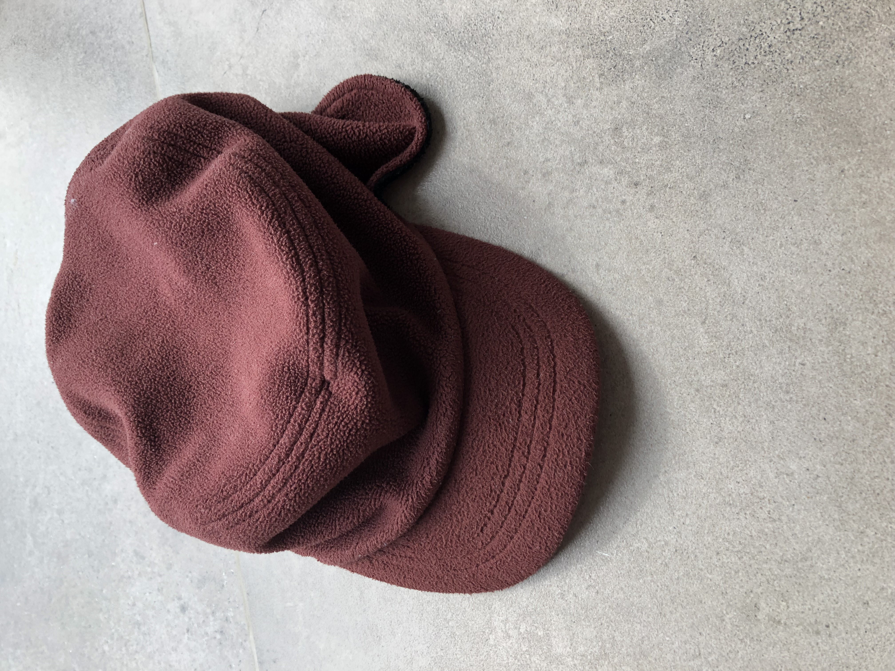
Holden Caufield's Hat
IB talks march 28 2022- april 8 2022 The group had ib talks throughout the classes, they explained what they where going to do in each ib class. Nothing that they didn't know, however, the IB talks made several students question their previous decisions about what to take in the ib. In advisory they had a talk about IB subjects, Coyle said that the last day in school would feel amazing but sad, they all felt sad because they knew that someday, they will walk into a class for the last time, and be together in that school for the last time, the class was sadly thoughtful about the future, all of the class kept saying a common spanish metaphor "en el dia de Mañana" which means "in the day of tomorrow". Lucas fiandra interrputed the thought by saying "but tomorrow is saturday"
By the way "The Day of Tomorrow" is a direct translation from the Spanish saying "El Dia de Mañana" which means "Some day in the future". "Tomorrow" in this case is any day in the future.
Semana Santa/De Turismo 9/04/2022
Most people stayed in uruguay, but some people left. Not much happened.
Seba had a haircut:He became bald and refuses to elaborate
IB decisions:In Tuesday 19 they have to decide what to do for the IB's, Coyle is leaving for next year, so no one chose English literature.
A Disease 2022: In wedenesday 20 many people in the school got a painful stomach virus capable of making many people unable to attend school. The ones affected where Ethan, Marina, Fede, Matias, and Chiara, in Tuesday 26 everyone came back
Bonus IB talk 26/04/2022: Everyone in the class chose English Lnaguage and Literature since the teacher for English Literature Kimberly Coyle is leaving. Mr.Amaral and principal Ron Sisson made a final IB talk to see what was happening. The class explained and the teachers said that the school was going to take care of choosing a good teacher for English A Literature. But what the teachers didn't know is that the English teachers (Kimberly Coyle and Maritte Mosckovicks) made an agreement with the class in which if everyone in the class chose language and literature, then Kimberly will teach literature and Mosckovick would teach language and when Coyle leaves then Mosckovicks takes over, that way they would have both teachers in the IB.
For this reason absolutely no one took lit english
Stuco elections April 25 2022 :In stuco elections, fede got elected as president congratulations Fede, absolutely no one doubted him. Fede is very organised and ontop of things, or at least it seems like he is. He gets things done.
SAAC :Saac tournaments happen between these, can't remember exactly but UAS comes fourth. Lupi and Santino's got hair cuts, San is bald and Lupi is different. Lupi doens't like being different.
Ouch:San and Mati, vs Timo and Martina. An Epic ping pong match where Martina hits Timo in the face with a ping pong paddle and Timo swore to never play duos ever again.
Pizza time 29 april 2022: The PE class brought money for jeff to buy a pizza, and Timo brought guarana and lemon tomato chips (callback!). After eating they went to play volleyball.
Days of cold start: The days got colder
International Day
People put stands of many different countries with food and information about them. Those who went to the international day had basically a free lunch since you could try food from all around the world.
Those who went
Lupi
sebass
Timo
Marina
Alex
Fede
Martina
Angie
Milla
Nata
Chiara
Luca
Lupi kind of tried out the ewheel. The ewheel
Timo tells Sebas that he finds 4-leafed clovers often, and Ethan confirms Timo's claim, Sebas asks for a 4-leafed clover. Timo often gives out clovers to people as a way to wish them the best, but it has been a while since he has done this so he brings it back.
Timo gives Sebas a the first 4 leaf cloverthe other day, he kept it in a book called, "the 48 laws of power." There is a chapter of the book that talks about how you need to surround yourself with lucky people and use their luck. That book I dislike, living to obtain power is a sad life.
Anyways, Sebas kept the clover in his binder until the end of this story.
04/05/2022Timo healed his hand. During vacations, he bent it in a strange way where it started hurting when he used it. He had to learn to write, play ping pong and volleyball with his left hand. But now he can finally use his right. He is better at ping pong with his left now so he is left handed in ping pong and also volleyball.
05/05/2022:
Timo sometimes has dreams that end up predicting something that happens in real life. Timo had a dream with a prediction that Marina was going to leave before the IB, he told Sebas this prediction. They agreed that if this prediction was true, Timo had superpowers.
05/06/2022:In advisory, they meditated and did Yoga. Not the most exciting advisory, but not the worst one by a long shot. Good Stress relief in my opinion.
Madness of the Table Tube Gang
06-07/05/2022
The table tube gang + Ethan decided to go watch the Multiverse of Madness the marvel film. But more happened after that. The Movie was really interesting, it was definately watchable. But it wasn't really that good, and it was kinda nonsensical at some moments. I really liked the part where Doctor Strange used the souls of the damned to stop the Scarlet Witch from using America Chavez to kill the Multiverse of Madness.
People
Milla
Fede
Timo
Alex
Megan
Ethan
Josh:Left early
story
First they went to watch the Multiverse of Madness, the movie was okay, not great, not terrible. After that fede lead the way to arocena, but the gang stoped at a park. In this park the gang played with swings and other things, and then some people decided to climb trees. Josh left the group here.
Handwhistle lessons
while on a tree, Timo explained how to hand whistle to Milla and Ethan and they where capable of doing it sometimes. The hand whistling cult expands further, Timo's goal is to teach this to as many people as possible. Alex couldn't do it but he will learn eventually. Also Josh left the gang in this park.
Milla, Megan, and Ethan learning how to handwhistle on a tree
After that the gang kept going to arocena, on the way Timo tried teaching Alex how to handwhistle again but Alex simply could not get the hang of it, then the gang started singing random songs like "gotta get up" or "house of gold" until
El Robinson
Some homeless guy approaches the gang and says hi, he asks if the gang speaks english and the gang responds positively, he asks for money, Milla reaches her pockets for a 100 peso bill and hands it to him while the rest of the group simply had no money, except Seba who had his pocket full of cash, but he did not want to give him money because if he opened his pocket the man would see how many bills he had but Sebas would only give him like 20 pesos and it would have been kinda awkward. The man told his story.
The man came from a wealthy family and he studied a lot and became smart, he knew what a diode was, however he did not listen to his parents, who forced him to go to church. He then sold his house to play the guitar in the streets but then became poor and homeless, while the brothers that did listen to their parents had money and fun, he also sang some songs and christian prayers, he said that he worked for stella maris(a church). Through his speach he was smoking a cigarette. He knew many languages like German, english, spanish, chinese, armenian, and probably another one which I do not remember. He told them his name, Robinson, and thanked Milla for the money, they thanked him and continued.
It is very likely that none of that was true, but the Gang thanked the man and they continued on their journey.
The gang was now thoughtful thanks to Robinson (although Ethan is jewish and Robinson said many christian prayers), so the gang discussed theories. Milla's theory was that life is about building up you're energy and dying is just to realease the energy into the world. Timo agreed with this. Ethan discussed the theory of brains forming in supernova's and the universal conciousness. Sebas also talks about how he is afraid of death and the idea of nothingness after death.
The reason the gang was going to arocena was because Timo remembered there being a Rudy in arocena. Fede doubted Timo about Rudy in arocena, claiming that it was just his ADHD brain working bad. Timo was now beginning to doubt himself, maybe he was just being dellusional and it wasn't really there. But his worries vanished when in fact there was a Rudy in arocena. However its innaguration was tommorrow, so they couldn't eat there. So the Rudy restaurant had apparently not opened yet.
Crepas
The group got there just in time before it closed, everyone got something to eat except Sebas who got a smoothie
The walk
The gang got up and started walking, they went to la rambla where Alex and Seba noticed Timo was only wearing a T-shirt even though it was 8 degrees celsius. They asked Timo if he was cold but Timo wasn't, they asked how and he responded "homeostasis and breathing" and then Ethan made a demon slayers reference. Timo really likes the cold and really dislikes the heat. He usually only wears a sweater if the air is too damp or it rains.
The gang then walked down to the beach where the group seperated into 3 groups, there was alex, ethan and timo at the front, fede and sebas at the back, and milla and megan switched between groups. The front group spent sometime trying to help timo with his ib decisions, chem or physics, or computer science... or biology (he is really lost) while the back group creted an awesome poem. Timo also explained breathing to Alex who was getting colder, you have to use your diaphragm (I probably messed up the spelling of that word). The gang walked for a long time until they reached a street that lead to fede's house. The gang went to fede's house and parents came and some took uber's and the table tube gang members returned to their homes.
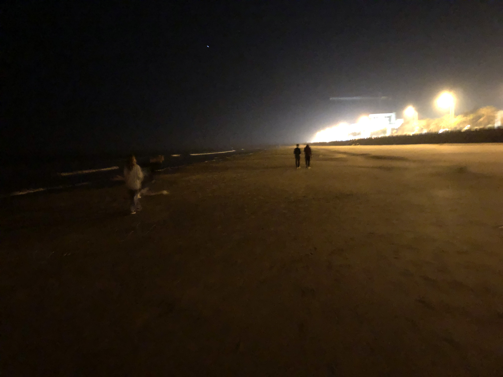
Photos of the walk in the beach, and a beautiful bilingual poem
08/05/2022:Martina comes back, she had left somewhere I don't know if I mentioned it. Lupi leaves
11/05/2022 AP Spanish culture exam: Some people took the AP exam. It was pretty easy in my opinion
Jeff's advisory 13/05/2022:This year, many fridays became half days, so many adivisories where skipped, this friday jeff decided that instead of doing exercise, he was going to ask 3 questions to the class. "Are you going to date in college?" "What do you consider cheating?"" and finally "Where do you see yourself in 4 years". People gave their opinions, for the first some said yes and some said no, the most interesting answer was Daniel's, not because of his answer, but because of the fact that you could physically feel him thinking of every possible scenario for like 15 seconds and the said no. He then explained his calculations, claiming that he was going to work hard and would not have time for a girlfriend. For the second one everyone kinda agreed that doing anything unironically romantic with someone is bad, except Mili who believed that making out with someone to gain something like free tickets to a place is worth it, no one agreed. And for the third question, not many people answered it, but Dani informed the class that he was going to become a software engineer and he has his entire life planned, good for him.
Days of clouds 14/05/2022-##/05/2022:Many clouds cover the sun. This clouds bring strong winds and rain with them. Lupi came back.
17/05/2022 Alerta Naranja: Strong winds today, the national metereological service put out an orange alert.
Doug Murphy:New Director for the next year, his son will join the group, he was introduced to the class in US History. They come from the Carribean Islands. Doug Murphy has a son that will be joining the class. His name is Chad Murphy. Dani lauphs at the name of Chad right in front of the future Director. luckily he doesn't seem to notice. The future director looks really good.
Dani lauphed at the name because around this time there was a meme about someone called "Gigachad" and Dani just found the name funny. He meant no disrespect.
19/05/2022:
Most of the class goes on a Uruguayan culture field trip. They first visit some buildings and they learn about their history. Then they go to the museo of artes visuales, during UP History, many people have prepared presentations of the paintings that were displayed.
After looking at visual arts, they go to a nearby Mc Donalds. In this Mc Donalds, Timo tells the Table Tube Gang about Thomas Midgley and Clair Patterson.
What he did: Ethyl (tetraethyllead)
Basically, Thomas Midgley is a man that created an anti-knocking agent that prevented engines from getting damaged, however the anti-knocking agent (tetraethyllead) had lead. Midgley kind of hid the fact that his compound had lead by siply calling it "Ethyl". Thomas Midlgey didn't care and he sold it, it became the most used antiknocking agent worldwide. Many people started suffering from lead poisoning, and many people have brain problems because of this. He is the reason why older generations have a higher concentration of lead in their bones and teath. Clair Patterson was the scientist that discovered that the extra lead in the enviorment wasn't natural, he did this by looking at the concentration of lead in different sea levels and in glacial samples. Clair campaigned against Midgley with his evidence.
Despite knowing how dangerous lead was, despite being warned by several health authorities about the dangers of his invention, Midgley persisted with his product and became a billionare. But he didn't stop there
Part 2: Freon (dichlorodifluoromethane)
Thomas Midgley was also the one that invented a refrigerant. During the 1920's, most refrigerants where toxic or flammable. Midgley created a chemical compound that was neither flammable or toxic. He created dichlorodifluoromethane, the first chlorofluorocarbon (CFC). This amazing substance was marketed under the name of "Freon". The substance is actually very safe, unfortunately when it goes up into the atmosphere and UV radiation hits it, it creates another substance that can react with the ozone in the ozone layer. This effectively created a hole in the ozone layer
Quotes about Thomas Midlgey
Enviormental Historian John Robert McNeill says that Thomas Midley "had [a] more adverse impact on the atmosphere than any other single organism in Earth's history."
Author Bill Bryson states that Midgley possesed "an instinct for the regrettable that was almost uncanny."
Science writer Fred Pearce described him as a "one-man enviormental disaster"
You get the gyst
24/05/2022:Lupinacci gets a haircut and now he does not want to show his head. Also Lupi and Timo had a ping pong match worthy of remembering, they both played really well. The match was to 11, however there is a rule that states that you have to win by more than 2 points. So the match went up all the way to 21 until Lupi won. The match ended with Lupi smashing the ball and Timo (who was 3 meters away from the table in a defensive position) failing to receive Lupi's attack correctly despite his preparation, and thus Lupi won.
24/05/2022-25/05/2022:Teachers try to convince students to take literature A in IB because everyone chose Language and Literature. They fail epically
24.05.2022 Stuco elections:Stuco elections at lunch are held and the winners are Timo and Chiara. Timo will be the class president. And Chiara will be the representative. Timo is confused about how he was elected as class president, but he is excited to represent the class.
25/05/2022 The Speeches start: The class do speeches in english about mulptiplt topics.
First Day
Sebas:Corporations are blaming people for climate change
Milla:Current education system is wrong
Megan:Animal torture should not be happening
Mili:Rape should not be happening
Lucas:Climate change should not be happening
Angie:Global warming should not be happening
Josh:Inclusion is good but if it is forced then it is another way of discrimination
Nicole:Sex education should be a class
Chiara:School should have days dedicated to tending to mental health
Second Day
Martina:Beauty pageants should not be happening
Bruno:The penalty of death should not be happening
Daniel:Being agreeable can be good but don't get used and manipulated
Luca:The second ammendment should not be happening
Lupi:Advertisments where being obese is displayed as beautiful are bad
Marina:Don't comment on someone's body when they didn't ask for youre opinion
Fede:Florida's law of lgbtq repression should not be happening
Matias:Getting vaccinated is good and everyone should do it
Ethan:There is no proof videogames cause violence
Timoteo:Nuclear power should be used to forfend climate change
Alexander:People should stop buying palm oil products.
The most remarkable speach in my opinion was Sebas'
An advisory where people wrote down philosophical questions and then the class tried answering them. The questions where
What defines a mindset?-Megan
Do you believe in fate?-Alex
Is a utopia possible?-Ethan could not come up with one so Timo gave him his.
I forgot the other philosophical questions, but these are the only most important ones. Dani thinks that the question "What defines a mindset" was a dumb question. In my opinion Dani is wrong.
D'gusto
Megan wanted to go with Milla to a food festival, Timo was just walking in the food festival and he encountered Megans mom, Megan then had the idea to summon the TTG to the festival. They ate hamburgers and Crepas and also talked
Also, Sebas and Timo talk about all of their inside jokes and how there was lore to them. Basically, Sebas once made a joke during history about how he was the one that killed Lincoln by stealing John Wilkes Booth's skin, puting it on, and then framing him. During this festival, Sebs claims that he also started the witch trials because he hates skinwalkers. They also conclude that Megan is a skinwalker because she likes animals and she can't read. Also Milla is Jesus and Alex is a detective.
All of these jokes ended up constructing some kind of story or lore. So they will ocassionaly make a jokes about Sebas participating in historic events a long time ago, Milla being one of the most famous people in the planet, Megan doing whatever skinwalkers do, Timo being a catalyst (he just really likes that word), and Alex conducting investigations. Fede is the only one that doesn't have a special title but he often stands against discrimination so you could say he is an activist.
Before the group arrived at the festival, Timo bought a green mug because he liked how simple it was. It has absolutely no labels or any writing at all, its just a really cool shade of green. He thinks it would make a great gift because of how uniquely simple it was. But he doesn't know who to give it to.


.png)


 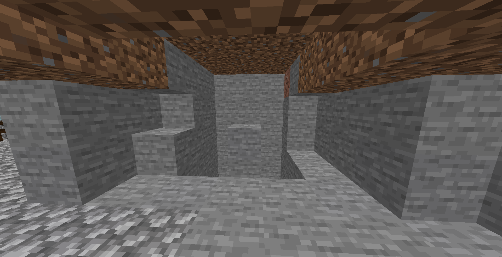
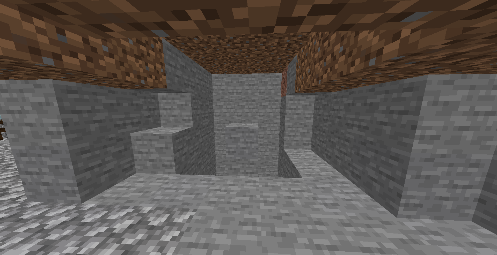


.JPG)
.JPG)
.JPG)
.JPG)
.JPG)

.JPG)


 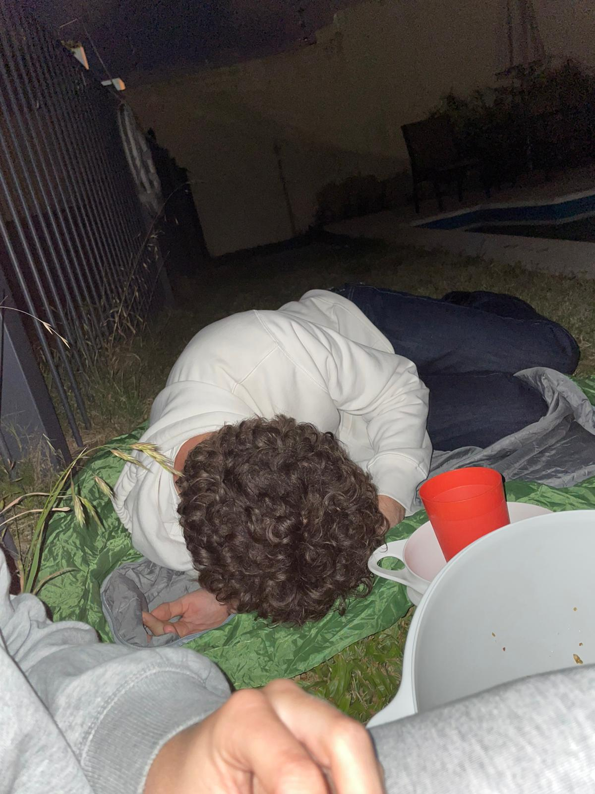
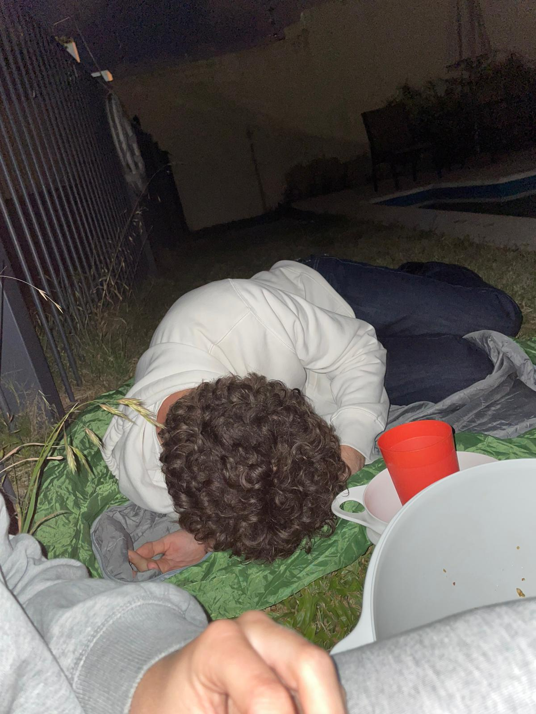


 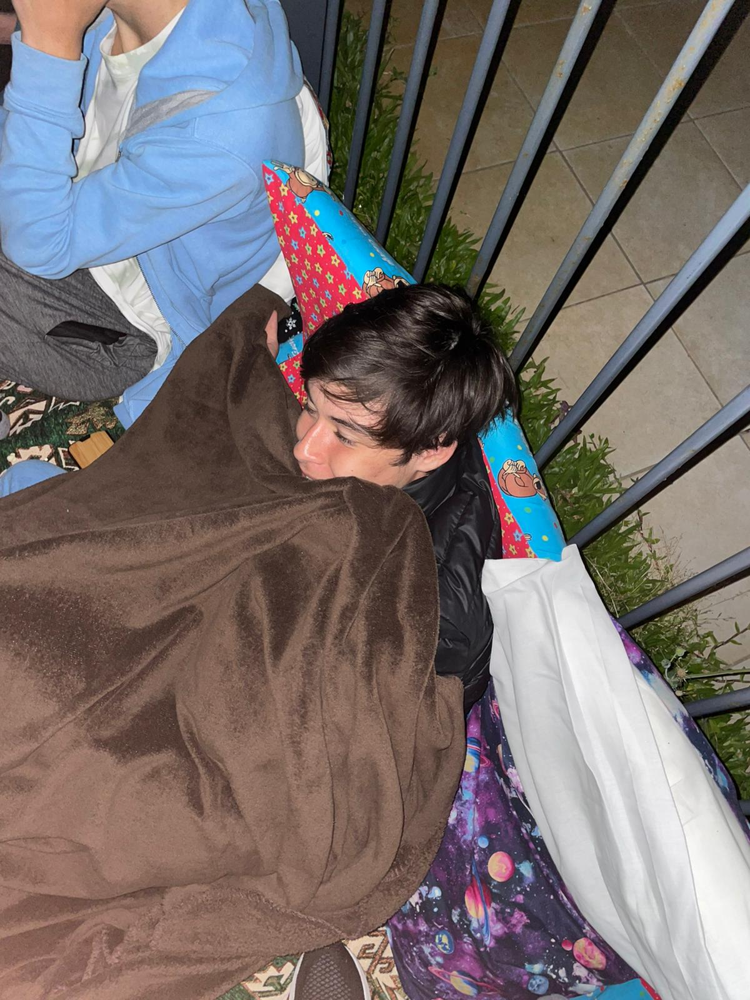
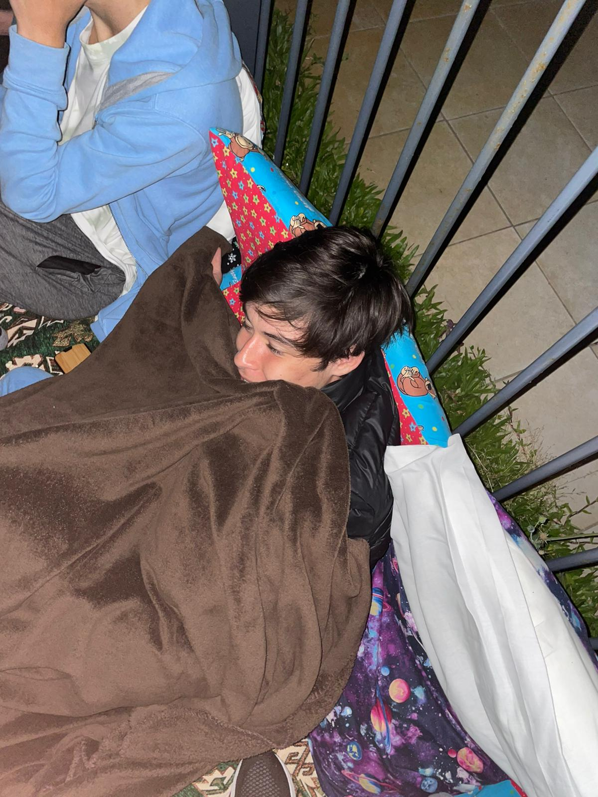


 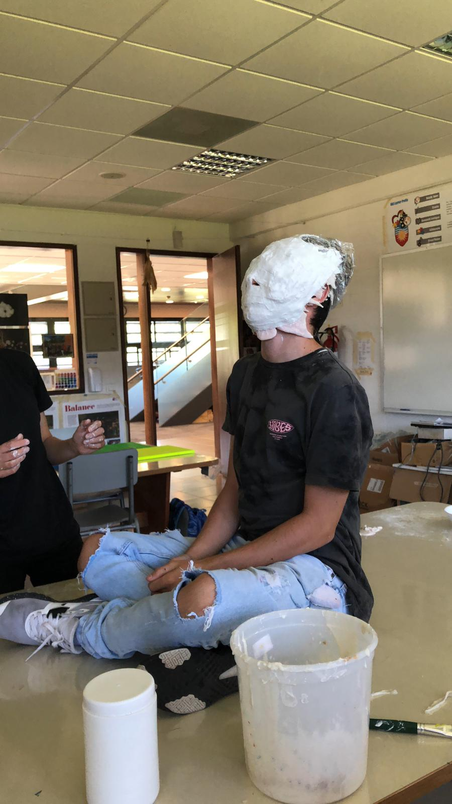
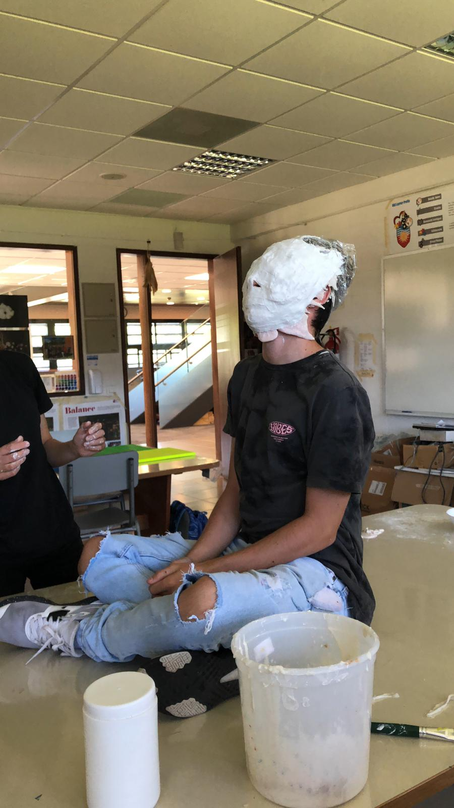


 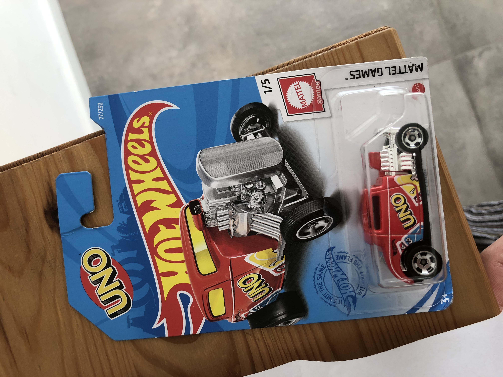
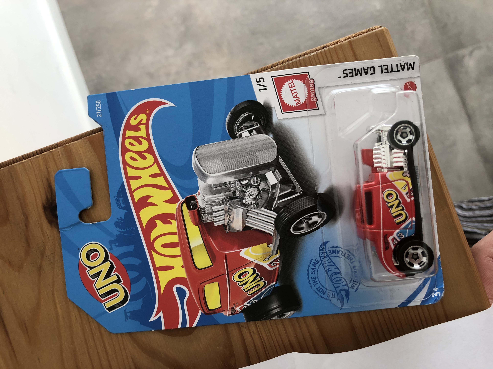
 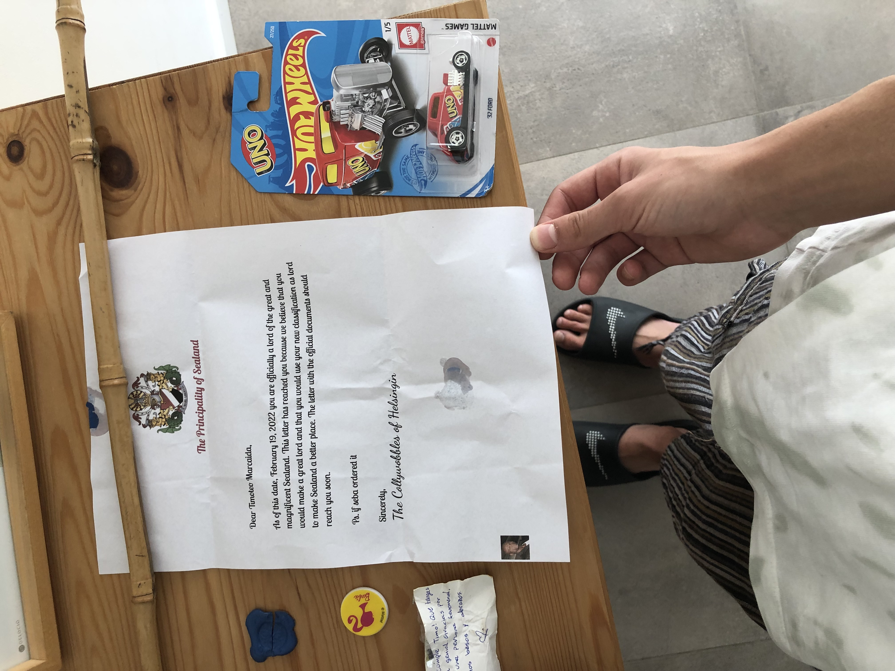
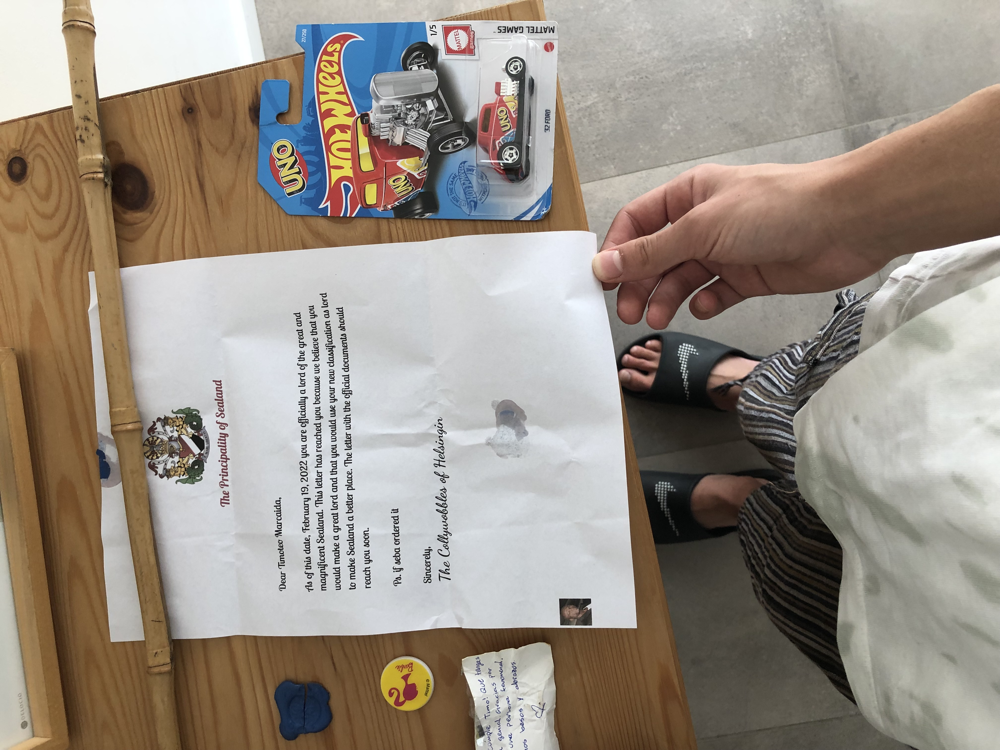
.jpg)
.jpg)
.jpg)
.jpg)